===-=-=-----
SOLDAT 1.7.0 (c) 2001-2016 Michal Marcinkowski
-----=-=-===
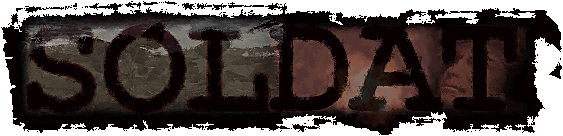
:=-==SOLDAT MANUAL (1.7.0 English)==-=:
Index:
Introduction
Requirements
The Story
Getting Started
Default Controls
Game Modes
Game Options
Game Screen
Weapons
Bonuses
Commands
Chat
Dedicated Server
ANTI-CHEAT Protection
Version History
License and distribution
Credits
Contact
Registering Soldat - info here
:---===INTRODUCTION:
Soldat is a unique side-view multiplayer action game. It takes the best from games like Liero, Worms, Quake and Counter-Strike and gives you fast action gameplay with tons of blood and flesh. Soldiers fight against each other on 2D battle arenas using a deadly military arsenal.
:---===REQUIREMENTS:
Minimum requirements:
- A PC, a keyboard, a mouse, a brain
- 333mhz processor
- Video accelerator that can run Direct3D
- Graphics card compatible with DirectX 8.1
- 32 MB RAM
- Some free MB on disk
- Sound card
- Network card or modem
- Microsoft Windows 98/Me/2000/XP/Vista/7/8
- Microsoft DirectX 8.1
:---===THE STORY
It's Quake style:
A couple of guys decided to kill each other and you can be one of them.
Singleplayer.
The easiest way to start a game:
- Select a map from the MAPS listbox on the right
- Select some bots from the BOTS checklistbox on the far right or some
random bots from the RANDOM BOTS field
- Click the START GAME button
Multiplayer.
If you want to play with other people, you have to decide how first:
a) You start a game and others join you
Click on the OPTIONS menu. In the NETWORK
options select connection type (Connection - LAN /Internet). Set the online players limit
(Max Players - should be small if you have a slow internet connection). The game can be
registered in the lobby server in internet games (REGISTER IN LOBBY SERVERS), so other players can find your game in the
JOIN GAME servers search. Now select a game mode, some maps from the list
and press START GAME in the first menu. If your game has been
successfully registered in the lobby server you will get a message in the game.
b) You join a game
Click on the JOIN GAME menu. If you know the IP address of the server you want to join then type it in the REMOTE HOST IP field. If you want to search for active servers in the internet or LAN, click REQUEST SERVERS. Double click or select a game from the list with the lowest PING time and with players on, then press JOIN GAME.
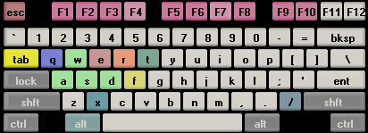
[A] - run left
[D] - run right
[W] - jump
[S] - crouch
[Left Mouse Button] - fire
[Right Mouse Button] - fly
[E] - hold down or release after a while to throw grenade
[F] - throwaway current weapon
[X] - go prone position
[Q] - change weapon to secondary
[R] - reload weapon
[T] - chat
[Tab] - activate/deactivate weapons menu while waiting for respawn
The above keys can be changed in the PLAYER options.
Tricks:
Flag throwing - Hold jump key + crouch key (default W+S)
Backflip - Jump backwards and press the fly button
[/] - enter command
[F1] - players list with scores /
[ALT + F1] - hide player names
[F2] - weapon statistics /
[ALT + F2] - show/hide sniper line
[F3] - minimap on/off /
[ALT + F3] - statistics (FPS, ping, network bandwith)
[F4] - take screenshot (saves it to Soldat\Screens)
[F5] - stops/plays music
[F6] - previous music track
[F7] - next music track
[F8] - record/stop demo / fast forward while playing demo
[F9] - minimize the game
[F10] - pause game
[ALT] - + a,b,c... or 1,2,3...0 keys - chat taunts or commands
[ESC] - stops the game and shows the game menu
:---===GAME MODES:
1. Deathmatch
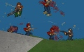
Everybody fights against each other. The one who kills the most wins.
Recommended Respawn Time: 3-6 seconds.
2. Pointmatch
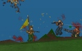
The same as Deathmatch but here you fight for points. There is a yellow
flag on the map, when you carry it you double your points for kill. You can also
get points for multikills. For killing 2 guys in a row you get double points,
when you kill 3 you get 4 times more points. If you carry the flag and kill 6
guys in a row you can get 64 points!
Recommended Respawn Time: 3-6 seconds.
3. Rambomatch
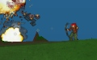
Rambo - First Blood style. On the map there's John Rambo's Bow. The one who
takes it gains super powers and can regenerate health. The rest of the
players hunt him for the bow because only Rambo gets points for kill.
Recommended Respawn Time: 6-10 seconds.
4. Teammatch
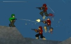
There can be 4 teams on the map (Alpha Team, Bravo Team, Charlie Team, Delta
Team) that fight against each other. The team that gets the highest score (sum
of all kills) wins.
5. Capture the Flag
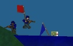 A
competition for two teams (Alpha Team & Bravo Team). To score you have to steal
the opponents team flag and bring to your base with your flag.
6. Infiltration
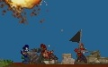 There are two teams (Alpha Team and Beta Team). The blue team has a base with a black flag, that they must defend. The goal of the red team is to steal the black flag and bring it to the white flag (usually near the reds spawn place). Recommended Realistic Mode.
7. Hold the flag
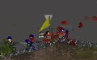 Two teams (Alpha Team and Beta Team) fight over the yellow flag. The team that holds the flag gets points every couple of seconds.
:---===GAME OPTIONS:
Standard options available in the OPTIONS menu:
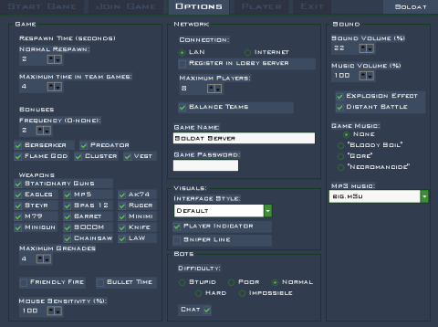
- GAME
Respawn Time:
Normal Respawn -
Time, in seconds, that you remain dead until your next respawn.
Used in Deathmatch, Pointmatch and Rambomatch.
Maximum Time in Team Games -
In team games (Teammatch, Capture the Flag, Infiltration)
the respawn system is called Wave Respawn.
During the game there is set a global respawn timer for all players. It's cycle
depends on the number
of players in the game. When it goes to zero everybody that have been killed
before - respawn and the timer
starts again. For example: When there is 20 players (10 in each team) the timer
will reach zero every 40 seconds.
Every 40 seconds everone that died in that time will respawn. Maximum Time in Team
Games is used so that this
time isn't too long, it shortens it to the value you set.
Bonuses:
Option to turn off bonuses.
Frequency -
Frequency of special bonuses appearing. 0 - never... 5 - lots.
Weapons:
Option to turn off weapons.
Maximum Grenades:
The maximum amount of grenades you can carry. It is also the number of
grenades you pick-up in the
boxes. On respawn you get half of this amount.
Friendly Fire -
If checked you can kill your teammates. Not recommended in internet games.
Bullet Time
When all players are nearby (on one screen) and someone is
killed the game goes into bullet time mode which is a cinematic slow
motion effect.
Mouse Sensitivity -
The sensitivity of mouse cursor movement.
- NETWORK
Connection -
The type of network game you want to play (LAN/Internet).
Maximum Players -
Maximum number of players that can join your server.
Register in Lobby Servers -
When you start a server it can register in lobby servers so people can find
it in the JOIN GAME servers browser.
Game Name -
The name of your game server. It will be shown in the servers search.
Game Password -
Your game servers password. Only players that know it can join.
Balance Teams -
Players that join server will be forced to join the team with less players.
Works in CTF and Infiltration.
- VISUALS
Interface Style -
You can change the style of the game interface. Interface Style
changes the graphics, cursor, position of statistics and more.
Player Indicator -
If is on you will see a little arrow above your player, so you know which one is
yours.
Sniper Line -
Draws a line between the player and the cursor which helps aiming on far
distances.
- BOTS
Difficulty -
Affects bots accuracy and behaviour.
Chat -
If on the bots talk from time to time.
- SOUND
Sound Volume -
The sound volume in percents. Also affects the music player volume.
Music Volume -
The volume of the Game Music in percents.
Explosion Effect -
The effect that happens when something explodes near your player (you
become deaf for a few seconds and hear a whistle sound).
Distant Battle -
Turns on/off distant battle sounds.
Game Music -
Original game music that can be played during the game.
In the Start Game options:
Kill Limit, Point Limit -
When a players Kills or Points reach this number the round ends.
In Teammatch the team score
must reach it.
Capture Limit -
Flag captures limit in Capture the Flag mode.
Time Limit -
Amount of time that the round is played in minutes.
Survival Mode -
There is no respawning in this mode. After a player is killed he has to wait
until there is one man standing or one alive team and then the round ends and
everybody respawns again.
Realistic Mode -
This mode is for advanced players.
- Players have low health
- Falling damage
- You see only what your player sees. If someone is behind a wall you won't see
him.
- Weapons have recoil. After a shot your cursor goes up
(To prevent this you should fire single shots or short bursts).
- No special bonuses.
Loop -
Loops the map list. If not checked the game ends after the maps are finished.
Random Bots -
The number of random bots that will play the game.
In team games this option is next to the team name.
In the Soldat Setup options:
- Graphics
Fullscreen - if on the game runs in fullscreen mode. Some
problems can be solved in window-mode.
Dithering - useful in 16-bit color mode. It smooths the colors so
they look like 32-bit.
Antialiasing - it smooths the whole game. Available only on video
cards that support it (like GeForce).
Bitrate - color mode. 32-bit is better, but not all cards are
compatible with it
(like Voodoo).
Refresh Rate - the rate of monitors refresh.
Video Adapters - available video adapters.
- Sound
Sound Quality - sound output quality.
Sound Output Type - available sound devices.
Sound Driver List - availale sound drivers.
- Performance
Particles on screen - amount of extra elements like: blood, smoke,
gun shells, dust.
Bot Seeing Quality - the quality of the bots eye. Affects the
games performance.
Render Bullet Trails - renders long bullet trails.
Render Weather Effects - renders snow, sand or rain.
Render Smooth Polygons - renders nice smooth polygon edges.
Show Death Console - show the kills console in the upper-right
corner.
File logging - turns on/off file logging (console logs and kill logs).
Auto record- The game automaticly records the last
minute (configurable in soldat.ini) of the gameplay (in
demos/autodemo.sdm). The recording can be saved at any time by pressing
F8 (saved in another file demos/autodemoX.sdm). Press F8 twice while
autorecording and you can record a normal demo.
- Network
Game port - the server's port that players will join.
Internet connection speed - the speed of your internet connection.
Max Ping - the maximum ping time that players can have on your server.
Servers greetings message - the message that is displayed for people
that join your server.
Never forward clients - if you have a firewall with open ports
check this, so that clients don't have to override the firewall through the
lobby server.
Register server with All-Seeing Eye - the server registers in All-Seeing Eye (http://www.udpsoft.com).
Server Link - a link that will be displayed on the lobby servers
web page. It can be the servers www page or admins e-mail.
- More
Video Compatibility - use only in emergency.
Force Software - runs the game without hardware video acceleration.
Blank Screen while bonus fix (old ATI cards) - fixes the problem
with the blank screen if you take Berserker for example.
Texture Filters - change if you're bored.
Backbuffer Count - change if you're really bored.
Languages - Change - allow to change the language of the text in
Soldat (language files are placed in the Soldat\Txt\Languages folder)
Non-standard options are available in the SOLDAT.INI file.
:---===GAME SCREEN:
The Soldat HUD:
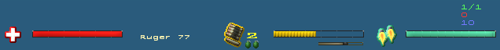
- The Bars in the bottom of the screen are:
Red - Health
Yellow - Ammuniton or Reload Time
Little Gold - Fire Interval Time
Blue - Jet Fuel
- Player Status [on/off F2] is usually placed above the jet
fuel bar:
First green number, from the top: your place in the game / number of players.
Middle red: your kills/points and points to leader.
Purple: Kill Limit/Point Limit/Capture Limit in the game.
In a network game you will see a lag-o-meter
- a dot that changes size and color depending on your ping time.
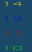
- In Teammatch mode in the bottom right there is a column of numbers
showing team scores.
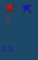
- In Capture the Flag or Infiltration mode in the bottom right there are numbers showing
captured flags by a team or teams points. When a flag is out of base you will notice also a
crossed flag symbol.
To select a weapon use the numerical keys 1-9,0 after start or when waiting for respawn. You can throw away your weapon and pickup another. You can carry two weapons (Primary & Secondary Weapon on your back).
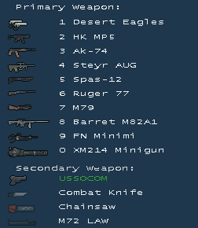
Selectable weapons:
1. Desert Eagles
Akimbo weapon! An automatic hand-gun that can break a man's arm. That's why it doesn't fire
so frequently but the bullets can easily pierce thick armor.
2. HK MP5
The most popular submachine-gun in the world. Fast and furious. In short
ranges it can defeat heavy weapons.
3. AK-74
Modified version of Automat-Kalasznikov from 1947. Weapon of terrorists and most
of world's army forces. The best rifle in the past 50 years.
4. Steyr AUG
This weapon looks like a toy but it sure isn't. With great speed it spits
out bullets killing everything in a fast attack.
5. Spas-12
This Shotgun makes a massacre with its 12-Gauge bullets. The best weapon for
close-contact.
6. Ruger-77
A hunting rifle. Very fast and accurate. Good for hunting deers and people.
7. M79
The famous grenade-launcher from the Vietnam War. Viet-Cong quickly ran to the
bushes when they heard its characteristic sound. The 40mm grenade can blast
anyone into pieces even after a shot behind a hill.
8. Barret M82A1
This sniper weapon has incredible power. It was designed to pierce
tank armor. The Army didn't even plan to use it against people. But who cares?
Sniper mode available if you crouch or go prone.
9. M249 (FN Minimi)
The best machinegun with great firepower. Can be very helpful for
backing-up your team.
10. XM214 Minigun
The famous "O'll Painless" from the movie Predator. This chaingun is mounted on
army helicopters. It uses a tremendous amount of ammo and can kill the same
amount of enemies.
Standard arsenal:
USSOCOM
Standard US special forces weapon. You get it always after respawn as a secondary
weapon.
Combat Knife
Standard infantry combat knife. One direct hit with this little thing
eliminates the enemy at once. Best for covert operations.
Can be also used as a throw knife with the throw weapon button.
Chainsaw
A chainsaw used for cutting piles of wood. If somebody finds a different
use for this please let everybody know.
M72 LAW
Anti-tank weapon, fires an explosive missile. Can be used only from
the crouch position.
Fists
After throwing out your weapon you can play Rocky.
Fragmentation Grenades
Doesn't kill immediately but a good tactical throw can harm or kill a
couple of enemy's at once.
On start and when you pickup the green box grenade supplies.
Special weapons:
Rambo Bow
The famous Bow of John Rambo available in Rambomatch mode.
Great for stealth operations. Silent, fast as lightning and lethal. You can
change to exploding arrows with the change weapon key.
Flamethrower
Is used to set other players on fire. Available after picking up the Flame God bonus.
Weapons settings are moddable by editing the file weapons.ini.
On the map you can pickup several
bonuses, that spawn from time to time:
Medikit
Regenerates your health to the maximum level.
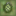 Grenades
Holds the amount of grenades you can carry (1-5).
Cluster grenades
3 grenades that explode when hitting the ground. After that they throw out deadly explosive pieces.
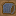 Bulletproof vest
It uses quickly but can save your life.
Flame God
Duration: 10 seconds
You become the immortal master of fire! You get a flamethrower to burn enemies and
also immortality, all in one. Flame your opponents without risk and laugh at
them when they try to runaway!
Berserker
Duration: 15 seconds
In one word: massacre! Your weapons are four times stronger in Berserker Mode. Crush your enemies with a couple of shots!
Predator
Duration: 25 seconds
Become the lonely hunter! In Predator Mode you are invisible. Also, no one can hear your gun fire but if you fly and fire too much, you will become a ghost and therefore easier to strike! Also, remember that if you're hurt by the enemy he will see your blood. Try to steal your opponents flag in CTF mode now!
:---===COMMANDS:
After pressing the "/" key you can enter one of the following commands:
|
Player commands: |
|
| KILL | harakiri |
| BRUTALKILL | very harakiri |
| SMOKE | player lights or ends a cigar |
| TABAC | player chews some tobacco |
| TAKEOFF | player takes off his helmet |
| VICTORY | player cheers |
| PAUSE/UNPAUSE | pauses/unpauses the game |
| Server commands: | |
| ADDBOT bots name | adds a new bot to the game |
| KICK players name or players number | removes a player/bot from the game |
| BAN players name or players number | bans the player on the server so he can't join in again |
| BANIP IP number | bans the IP number |
| UNBAN IP number | unbans the IP number |
| MAP map name | changes the map |
| RESTART | resets the current match |
| NEXTMAP | changes the map to the next one in the list |
| ADM players name | adds the player to the Remote Admins list |
| ADMIP IP number | adds the IP number to the Remote Admins list |
| UNADM IP number | removes the IP number from the Remote Admins list |
| KICKLAST | kicks the last player that entered the game |
| RESPAWNTIME seconds | changes the respawn time |
| MAXRESPAWNTIME seconds | changes the maximum respawn time in team games |
| LIMIT number | changes the current kill/point/capture limit |
| TIMELIMIT minutes | changes the current time limit |
| PASSWORD text | changes the game server password (temporarily) |
| SETTEAMx player number | forces the player to join team x |
| ADDBOTx bots name | adds a bot to team x |
| FRIENDLYFIRE 0/1 | friendly fire on or off |
| VOTE% 0-100 | changes the percentage of players needed to vote something |
| BONUS 0-5 | frequency of bonuses 0-none, 5- lots |
| MAXPLAYERS 1-32 | maximum players allowed on server |
| LOADCON | reloads soldat.ini server settings |
| LOADLIST xxx | loads the mapslist from xxx.txt |
| LOADWEP xxx | reloads weapons.ini weapon settings or from file xxx.ini |
| GAMEMODE 0-6 | changes the gamemode (0 DM, 1 PM, 2 TM, 3 CTF, 4 RM, 5 INF, 6 HTF) |
| REALISTIC 0/1 | switches realistic mode |
| ADVANCE 0/1 | switches advance mode |
| SURVIVAL 0/1 | switches survival mode |
| KILL players name or players number | kills/punishes the player |
| BANLAST | like /kicklast, bans for 1 hour the last player that joined |
| UNBANLAST | unbans the last player that was banned |
| LOBBY | reregisters the server in the lobby |
| SAY text | sends a text message to all players on the server |
|
Client-Server commands: |
|
| ADMINLOG password | used to login as game server admin |
| INFO | retreives useful information from the server |
| MUTE players name or players number | mutes the player so you don't see his chat |
| UNMUTE players name or players number | unmutes the player |
| RECORD name | records a demo stored in the Soldat\Demos folder |
| STOP | stops the recording of a demo |
Commands from a parameter:
These are parameters that can be used when running Soldat.exe:
- Soldat.exe -dedicated (starts a Soldat dedicated server)
- Soldat.exe -start (starts the game without entering the menu)
- Soldat.exe -dedicated -start (runs the dedicated server automatically)
- Soldat.exe -join IPnumber (port password)
(runs the game and connects to
IPnumber , port and password are optional;
example:
Soldat.exe -join 62.93.201.70
Soldat.exe -join 127.0.0.1 23073 tikikaka)
- Soldat.exe -demo name (freecam speed notexts
extract)
(runs the game and plays the demo specified by name. Optional
paramaters are:
freecam (0/1) - the user can freely change the camera (default 1)
speed (0-...%)- how quick the playback will be specified in percents
(default 100%)
notexts (0/1) - no texts, menus or cursor will be displayed during
playback (default 0)
extract (0/1) - extracts the demo to BMP files (default 0). Later they
can be used to make an AVI file in a program like "Bmp2Avi".
The sound can be extracted with a program like "Total Recorder". Please note
that this can take time and is not recommended on slower systems. For better
results specify lower speed (like 50%).
example:
Soldat.exe -demo demo12
Soldat.exe -demo demo19 1 200 1 0
)
- Soldat.exe -mod xxx (starts the game with a Soldat mod located in Soldat\Mods\xxx)
:---===CHAT:
The default key for Chat function is T (for team chat Y), to send it press ENTER.
Taunts - You can use ready taunts from the file TAUNTS.TXT (placed in the Soldat folder or your profile folder) by using the ALT key + alpha-numeric keyboard keys.
Teamchat - If you want your chat text to appear in the console only for your teammates insert "^" before the text, like this: ^Whats up!
A dedicated server is used to run a faster Soldat server
without a player.
You can do this in two ways:
1. In the SOLDAT.INI file, section NETWORK, find Dedicated=0,
change it to Dedicated=1.
2. Run the game with the parameter
-dedicated (Soldat.exe -dedicated). You can use the shortcuts in the Start Menu
If you want the server to start the game automatically do this:
- Run the game normally and enter the menu. Set all the game options (game
mode, time limit, map list etc.)
- Quit the game and the settings will be saved
- Run Soldat with parameters -dedicated -start
Remote administration
Players from outside the server can control it. To give this option to a
player add him to the Remote Admins list.
The commands for this are described here
COMMANDS.
Game Ports
Important! - If you have a firewall you should open the UDP game ports
default: 23073 for the server (can be changed in Soldat Setup) , client uses a default port: 23083
(can't be changed)
There is an option to join
firewall servers without opening the ports, but only through the lobby server
(through the server list - forwarding).
The Soldat server uses the following ports:
UDP: game port (default 23073)
TCP/IP: admin port = game port (default 23073)
TCP/IP: files port = game port + 10 (default 23083)
The Soldat network Anti-Cheat Protection is based on two modules.
Software company's developing multiplayer games
spend millions of dollars, hundreds of hours,
the work of thousands of people are wasted to invent the perfect anti-cheat
systems. All those systems are as good
as nothing because they forgot about one tiny little thing. The author of Soldat got
the idea after 4 seconds of thinking.
Now Sierra and other On-Line industry giants can't stand it that they didn't
think of it first. The first
Anti-Cheat Protection module in Soldat is simply:
I.
A request: "Please don't cheat while playing Soldat".
If that somehow doesn't work then please read this:
II.
Because of the Anti-Cheat protection system used in Soldat you
cannot use any hack tools like: memory finders, trainers, packet
editors, hex editors and dissasemblers while Soldat is running. It is
STRONGLY RECOMMENDED to CLOSE all programs running in
the background while Soldat is on. The use of hack tools will
degrade the game to a level it will no longer be playable.
Also editing the executable or other related files and cracking
the shareware protection will cause system instability and problems
with network play.
If this happens to you and you are sure you did not do anything
illegal please contact the author.
Please remember that this is a small shareware
game made by one man. If you try to break the game protection you
make harm to yourself because I can stop making the game if I'm without money and with
overload of work making new anti-hack and anti-cheat systems all the time. If
you want to hack something please concentrate on big company's like EA Games.
Hacking a big commercial title will prove that you are good, please leave Soldat
alone.
:---===VERSION HISTORY:
Current version:
1.7.0 (01.02.2016)
- Added new OpenGL renderer that replaces old D3D8 one
- Added error message for opengl initialization failure
- Added interpolation between frames for smooth rendering
- Added high resolution text rendering support
- Added support for higher definition images
- Added support for windowed fullscreen (Fullscreen=2)
- Added Render_Width and Render_Height options to set internal render resolution
- Added Optimize_Textures config which will resize textures depending resolution for lower GPU memory usage
- Added Mipmap_Bias and GL_Finish experimental configs
- Added Low_Power and Sleep configs to have better control over cpu usage vs timing precision
- Added file logging for graphics related stuff
- Added high resolution map textures
- Added 4K UHD objects-gfx
- Added 4K UHD default interface
- Added 4K UHD sceneries
- Added 4K UHD soldier graphics
- Added 4K UHD weapon graphics
- Added 4K UHD medkit, vest kit and grenade kits
- Added overlay.png to interface-gfx which is now used for bonus kit screen effect
- Added setup.sif is missing error message #614
- Added link to credits for inactive developers
- Added patch warn if trying to install over non compatible soldat version
- Added /reloadgraphics command
- Added desktop resolution config setting
- Added windowed fullscreen config option via combobox
- Modified rotated grenade kits 90* clockwise as a temporary fix for incorrect spawning angle
- Modified weapon menu icons based off weapons-gfx until proper HD icons are made
- Modified screenshots to be saved as png instead of bmp
- Modified scale down sprites that exceed size constraints instead of stopping game with an error
- Modified alignment for new default interface elements
- Modified converted images to png
- Modified bonus overlay to use a separate overlay.png image
- Modified default explosions, fire and smoke: slightly better quality + transparency
- Modified weapon icons, weapons-gfx and sparks-gfx: removed green screen, upscaled by 4.5x
- Modified custom interface loading to fallback to default images when they are missing
- Modified resolution setting to use desktop resolution when it's set to 0x0
- Modified map textures and edges to be loaded from png file if available
- Modified screenshots to be taken with internal render resolution instead of final resized one
- Modified soldier head, hands and Mr.T hairstyle graphics are now grayscale for better customization
- Modified skin colors to match new soldier graphics
- Modified removed unused graphics from interface-gfx, objects-gfx, gostek-gfx and weapons-gfx
- Modified map isn't reloaded when restarting same map
- Modified spin direction of knife and cluster grenade when facing left
- Modified gostek rendering code adding tweakable sprite alignment through mod.ini
- Modified reverted to 1.6.8 netcode for client
- Modified updated micro1 interface
- Modified do not show installer welcome page
- Modified patch do not show icon and group icon install option
- Modified switched to Play font
- Modified replaced FontHeightScale config with Font1ScaleX and Font2ScaleX with 125 as default
- Modified removed directx checks
- Modified removed AntiCheat API
- Modified removed Force Software option
- Modified removed none and anisortropic res filters
- Modified removed none and anisortropic texture filter options
- Modified removed backbuffer setting
- Modified disabled bitrate option
- Modified disabled refresh rate option
- Modified disabled antialiasing option
- Modified removed window resize setting
- Modified removed unused adapter config setting
- Modified disabled gamma setting from options
- Fixed frame timing code
- Fixed texture loading error on -dedicated mode
- Fixed incorrect health bar position when it's "vertical"
- Fixed position of vote menu when "scale interface" is disabled
- Fixed alignment of kill console text
- Fixed alignment of version text inside esc ingame menu
- Fixed big texts on bottom covered by bullet time wide screen cut
- Fixed bad flag initialization code
- Fixed invalid array index access
- Fixed animations initialized to wrong index
- Fixed alpha value outsite allowed value for sparks
- Fixed zero index access for bot ai
- Fixed error message when choosing an uninitialized custom color from color dialog
- Fixed ping dot ignoring its coordinates
- Fixed parachute so it doesn't break in half after being dropped
- Fixed missing Adapter setting in soldat.ini breaks config
- Fixed patch installer cannot be applied manually
- Fixed spawn "teleport" when map takes too long to load
- Fixed DrawText scaling issues
- Fixed parachute rope alignment
- Fixed weapon aim jerkiness
- Fixed soldat blocks installation directory #641
- Fixed free fonts after closing soldat normally
Previous public versions:
1.6.9 (31.10.2015)
- Added allow camera switching in demos while paused #274
- Added Survival_Clear_Weapons option in GAME section of soldat.ini
- Added numpad taunts #515
- Added new gui theme
- Added new ping time images in serverlist
- Added new default mod
- Modified changed update button to yellow
- Fixed spiderman bug
- Fixed starting single player game a few times causes hight cpu usage (#160 #323 #333 #520)
- Fixed alt and altgr don't work for assigned keys and supress input like shooting (#309, #530)
- Fixed soldat (not responding) when trying to find servers without having internet #463
- Fixed star and flag icon in the scoreboard are scaled down #601
- Fixed SetWeaponActive bugs weapons of a player on spawn #603
- Fixed wrong window height on startup
- Fixed player names with 24 chars result in HWID fail
- Fixed survival capping when everybody is alive results in a not ending round
- Fixed survival flag grabbing in multiplayer should not work after round end
- Fixed invisible shield where a player died
- Fixed survival mode respawning if out of map after round end results in a never ending round
- Fixed survival mode dead body outside map respawn bug
- Fixed survival mode team switch respawn bug
- Fixed broken nagscreen banner system
- Fixed knives should pass through dead bodies in non realistic #542
- Fixed nick completion shouldn't trigger without writing any letter
- Fixed respawn issues in survival when player falls outside of the map #286
- Fixed taunts triggering some actions undesirebly #215
- Fixed bot created by SC3 has no bot icon but ping 0
1.6.8 (26.10.2014)
- Modified command /votemap to show the message "cannot vote" when applicable
- Modified vote results to happen immediately if the required percentage is achieved
- Modified voice taunt menu key to also hide the menu
- Modified translations to not print empty lines in the chat console
- Modified freecam to not have the camera shake when heavy weapons are fired
- Modified the chat's nickname Tab-completion to cycle through names
- Modified the chat's nickname Tab-completion can be used without even typing anything, or with a substring in the middle of the nick
- Fixed health bar shows empty if health health exceeds limit #491
- Fixed ban on bots in singleplayer mode should return a kick message
- Fixed chat message displayed above the wrong player #417
- Fixed Player ID for team 0 displayed incorrectly #205
- Fixed the chat's nickname Tab-completion can complete a nickname mid-sentence
- Fixed knife colliding against position where someone had died #390
- Fixed some keys couldn't be assigned to the scroll wheel
- Fixed asymmetry in walking down slopes depending on facing direction and movement direction
- Fixed the character vibrating when standing still on flat polygons, which would trigger MovementAcc
- Fixed previous song playback on start being out of bounds
- Fixed the LAW's startup delay to be a bit less unreliable
- Fixed scoreboard not shown at the end of a demo playback when the map changed
- Fixed freecam key could be held down to make the cursor jerky
- Fixed rolling to quicker and less awkwardly transition into crouching
- Fixed throwing the flag could be difficult when close to polygons #166
- Fixed some possible memory leaks
- Fixed unable to get a ban reason in case of HWID ban #143
- Fixed server's possible cheating vote kicks no longer permanently ban players #246
- Fixed vote kick turning into a permanent ban #478
- Fixed kicking player when vote percentage is above 100% #522
- Fixed vote exploitable by leaving the game #204
1.6.7 (2.5.2014)
- Added new background polygon types: "Background" and "Background Transition"
- Added visualization of the player's MovementAcc by scaling the cursor
- Modified the lobby's player count column to not include bots
- Modified bullets to now take into account the weapons' BulletPush when pushing objects (flags, kits, loose guns)
- Modified removed TeamSpeak 2 support
- Modified vertical jumps by making it easier to do smaller jumps by letting go early
- Modified pressing Jump quickly followed by a direction should side jump you if the vertical jump hadn't yet begun
- Modified side jump speed to be the fastest when facing the direction you're moving in #170
- Modified behavior when changing movement direction to hopefully not mess up advanced moves possible in 1.6.5, yet behave consistently in both directions
- Modified the two spent Desert Eagle shells to be ejected with different velocities
- Modified the player's current MovementAcc to be more intuitive to predict
- Modified spectator and demo view to hide the inactive parts of the interface
- Modified demo playback to allow freecam by default
- Modified decreased the freecam deadzone again to make the sudden speed jump less abrupt #277
- Modified accumulated bink and selfbink to get diminishing returns faster, making it harder to reach ridiculous amounts
- Modified cursor scaling from inaccuracy effects to grow faster between smaller values, and slower between higher values
- Modified BulletSpread to have less effect when crouched and moving, and even less when proned and moving
- Modified player looking direction to be sent to the server more frequently
- Modified cursor to be visible during game pause #460
- Fixed bullets could only push one object (flags, kits, loose guns) at once
- Fixed bullets could push an object (flags, kits, loose guns) multiple times in an instant, giving huge push
- Fixed HTF incorrectly used some INF flag messages (referring to the Objective instead of the Yellow Flag)
- Fixed finishing a roll animation while airborne and with the crouch key still pressed, you would air-squat awkwardly and not be able to throw grenades
- Fixed ctrl+tab and ctrl+shift+tab active tab highlighting issue #451
- Fixed an animation glitch when holding Jump while a backflip animation ends
- Fixed players with bink weapons couldn't bink themselves
- Fixed explosives could bink team mates #398
- Fixed bink didn't work in non-team based game modes
- Fixed team mates could bink each other with explosives even though FriendlyFire was off
- Fixed the player's current MovementAcc being erratic when the player was transitioning between animations and grounded/in-air
- Fixed sniper scope cooldown could be bypassed by triggering an overriding animation
- Fixed camera jumping back and forth between the cursor and the map's center when looking outside map bounds
- Fixed camera not resetting to center when joining a new game
- Fixed freecam camera wasn't completely still when the cursor was inside the center deadzone #277
- Fixed camera not resetting to center when viewing above map bounds
- Fixed empty server_info setting in servers soldat.ini makes client display weird chars in F1 menu
- Fixed team menu keyboard input blocked if opening it using the cursor #428
- Fixed pressing an unmapped number when selecting a team causes no team to be joined and the menu disappears #388
- Fixed unable to toggle the weapon menu when carrying less than two weapons #181
- Fixed custom values of MovementAcc and BulletSpread didn't show differences properly in the weapon selection menu
- Fixed flags in CTF and INF game modes weren't using their flag texture
- Fixed clients' keys would act slightly "sticky" in online games, not resetting the controls every tick
- Fixed server didn't notify players about all key events from other players
- Fixed flag was thrown in a direction that was at least 16 milliseconds old #132
- Fixed side jump speed was slightly lower when facing right #170
- Fixed reloading Spas-12 when gun is empty now waits for fire interval delay to finish first #161 #365
- Fixed no longer able to simultaneously fire and reload Spas-12 while prone #474
- Fixed /victory sound only plays once at the end of a round in survival DM/RM #291
- Fixed cannot delete server with two pipe chars from favorites
- Fixed players that needed to download the upcoming map spawned using the previous map's spawn points, as well as seeing other glitches #239
- Fixed players that needed to download the upcoming map would be disconnected before seeing the final scoreboard
- Fixed incorrectly spawning with/without a parachute after going outside map bounds
- Fixed readonly.txt didn't do what it advertised #279
- Fixed readonly.txt didn't contain an updated list of maps and sceneries #95
1.6.6 (13.10.2013)
- Added the ability to roll out of prone when on ground
- Added scale interface option to config
- Modified made self-bink halve accumulation rate anytime when crouched or proned, and not only when staying still
- Modified the unprone animation to be "slippery" so you don't lose momentum when touching ground with it
- Modified decreased the freecam movement deadzone so the sudden speed change won't be as abrupt
- Modified jumping and side-jumping out the unprone animation to be quicker and smoother
- Modified the unprone animation to only take half as long
- Fixed pressing both [left] and [right] movement keys should move you in the first direction pressed #380
- Fixed incompatible test and release versions are visible when requesting lobby
- Fixed your own player name being displayed below you when your cursor is at the edge of the screen
- Fixed pressing multiple conflicting keys (reload, throw grenade, throw weapon, change weapon) should only perform the latest key pressed
- Fixed players appearing to be in a prone position when they weren't #326
- Fixed player's momentum often vanishing when coming out of a roll #369
- Fixed proning and unproning would interrupt the Spas' reload #379
- Fixed unproning would interrupt the weapon throwing animation
- Fixed unproning would interrupt the knife throwing animation #307
- Fixed proning and unproning would interrupt the weapon switching animation #317
- Fixed faster weapon switching glitch when pressing both [change weapon] and [throw weapon] keys
- Fixed camera for spectators moved to top-left on map change #31 #373
- Fixed spectator camera still trying to follow kicked player #33
- Fixed spectator camera still trying to follow player that switched to spectator #34
- Fixed spectator camera defaulting to top-left in single player
- Fixed spectator camera defaulting to top-left when looking outside map bounds
- Fixed freecam didn't move smoothly in widescreen #277
- Fixed player names weren't centered in spectator mode
- Fixed off-screen teammate names weren't positioned correctly
- Fixed player indicator visible in the map's top-left corner when you're spectating
- Fixed OSX servers are displayed as Windows servers in Servers List
- Fixed team mates could be binked under some circumstances #398
- Fixed cannot join spectator team through ESC menu on Windows servers #408
- Fixed controls momentarily locking when throwing knife in online games #383
- Fixed knife throw while airborne would make it impossible to do a subsequent backflip in online games #314
- Fixed grenades couldn't be thrown when inside "only team player collides" polygons #123
- Fixed grenades couldn't be thrown when inside "flagger collides", "non-flagger collides" and "flag collides" polygons
- Fixed momentum being lost or not being able to immediately sidejump as a roll or backflip animation ends
- Fixed momentum being lost or not being able to immediately sidejump as an unprone animation ends
- Fixed not being able to immediately sidejump out of crouch
1.6.5 (4.8.2013)
- Added workaround for black window in fullscreen mode on Windows 8 and later
- Modified Scale_Interface=0 in soldat.ini can now also be used by unregistered players #338
- Modified Scale_Interface to be enabled by default
- Modified piercing kill shots' exit speed changed from 90% to 75%
- Fixed flags and kits becoming black in windowed mode when tabbing out of the game and back in
- Fixed cant see through bullet collide polygon in realistic #348
- Fixed range errors caused by too small admin and remote ip arrays in client server
- Fixed scaling of crosshair and player indicator even though Scale_Interface=0 was set #336
- Fixed missing bonus power-up countdown texts #351
- Fixed wrong player getting hit by bullet when players are standing close to each other
- Fixed hit detection issue immediately after a bullet pierces
- Fixed big event messages weren't size-adjusted for resolutions other than 4:3 #174
- Fixed player and flag positions on the minimap were slightly off #221
- Fixed access violations caused by parachutes #340
- Fixed 24th character in player name being cut off #140
- Fixed controls momentarily locking when throwing knife #287
- Fixed esc menu 1,2,3,4 shortcuts work while writing kick vote message #349
- Fixed !,@,#,$ (keys on 1,2,3,4) work with esc menu
- Fixed the escape menu's team selection hotkey not working in non-team based modes #366
- Fixed the escape menu's team selection hotkey instantly assigning you to Delta Team in TDM
1.6.4 (23.7.2013)
- Added BulletSpread WM attribute which controls bullet/pellet spread on Deagles and Spas, and base inaccuracy on other weapons
- Added Checks for Movement packets being out of order to smooth out movement of players
- Added FiltersBox position changes depending on the window size
- Added FormatFloat to script functions which fixes bug #15
- Added Join Game tab controls resize/reposition horizontally
- Added Join Game tab controls resize/reposition vertically
- Added Push WM attribute which together with a bullet's velocity on impact decides how much it pushes the target
- Added copy soldat:// link when clicking Game Server IP: label on Join game tab
- Added drawing rows in alternating colors for Serverslist
- Added flagger collides, non-flagger collides and flag collides polygon types
- Added keyboard shortcuts (1, 2, 3, 4) for the escape menu
- Added nondefault gamemode names are drawn with gray color in Serverslist
- Added options for kill sort to OldScoreBoard: 2 for old style and 3 for new style
- Added wait time for bullet and explosion push to avoid eating #234
- Added numbers to exit menu
- Added InheritedVelocity WM attribute which controls how much of the player's velocity the projectile inherits
- Modified Chainsaw to deal damage in a line all along its blade instead of just at the tip
- Modified Desert Eagles' and Spas' networking by re-creating the same pseudo-random pellet spread on all machines #260
- Modified WM loading to better support partial modding
- Modified WM loading with unparsable values gives helpful error messages
- Modified accumulating bink & self-bink to get diminishing returns as they reach higher values proportional to their configured value
- Modified adding broken bots gives helpful error messages
- Modified autodemo to record everything
- Modified bink to stack instead of resetting when being hit
- Modified bots can also do idle animations
- Modified bullet collision checks to scale their granularity proportionally with the bullet's current speed
- Modified bullets to not get a damage penalty after they pierce a body
- Modified chainsaw is able to fire and reload while rolling, backflipping and changing weapons
- Modified chainsaw to only shake screen when you're hitting flesh
- Modified client and server to use packet rate adjusting based on current player count by default
- Modified client is also able to create Dummy bots with a "Dummy=1" attribute
- Modified client-server sync method for bullets to be a bit more accurate
- Modified cursor is now centered properly when cursor.bmp is another size than 16x16 (still needs to be in power-of-two)
- Modified disabled HotTrack functionaly for Serverslist (selecting of servers when on hover)
- Modified disabled screen shaking in freecam and demo mode
- Modified holding the grenade key to only throw one grenade in order to reduce accidents #180
- Modified inaccuracy effects to spread out more evenly instead of choosing "set paths"
- Modified minimum time required to hold the grenade key before it being thrown increased by about 7% to reduce accidents
- Modified moved FiltersBox so that it has enough space to the left and top
- Modified reduced wait time when requesting servers list
- Modified removed "This option will be available after registering" label from graphics tab in config.exe
- Modified removed lobby blacklisting support
- Modified removed resolution restriction for unregistered players
- Modified renamed Mp3List ini setting to MusicList
- Modified renamed mp3 folder to music folder
- Modified renamed mp3list.txt to musiclist.txt
- Modified screenshot and demo names are now YYYY-MM-DD_HH-NN-SS_MAPNAME_TYPE
- Modified self-bink to also work on semi autos #261
- Modified self-bink to be applied on 2nd bullet fired instead of on the 4th
- Modified spent bullet shells have a slight randomness in their velocity
- Modified spent bullet shells inherit the velocity of the player when fired
- Modified team collider polygon types do not longer collide with flaggers #192
- Modified texts and positions of the Alt+F3 connection info
- Modified thrown weapons inherit the player's velocity
- Modified thrown weapons to be thrown in the direction you look
- Modified allowed both bink/self-bink and moveacc to be applied
- Modified updated intro demo
- Fixed Alpha and Bravo flags not being placed symmetrically (flipped alpha flag)
- Fixed Chat-Flood ban lasts 5 min, says 20 #244
- Fixed DirectX Graphics error when using Soldat Clicker #201
- Fixed FireInterval values being shown as ten times too high in the weapon menu when a custom WM is used
- Fixed I/O 103 Error when logs folder is missing and file logging is enabled #240
- Fixed Invisible player bug
- Fixed Lobby server connections stay open after requesting server list #254
- Fixed Lost Team packet error
- Fixed PacketRate_Adjusting=1 not adjusting much at all and making you lag worse for everyone
- Fixed RayCast returns false if both the start and end points are inside a polygon #119
- Fixed Soldat "crash" if playback device is missing and registered
- Fixed Soldat fails to display interface images when starting the game with a mod #198
- Fixed Spas always firing its first pellet straight
- Fixed StartUpTime bypass by keeping the fire button held down during reload #264
- Fixed StartUpTime bypass from the roll, weapon change and melee animations #264
- Fixed access violation if playback device is missing and not registered
- Fixed being able to throw weapon while in the weapon switching animation #129
- Fixed bug #49 with caps not being showed in the scoreboard
- Fixed bullet collision checks assumed the bullet's speed was the same as that of the equipped weapon
- Fixed bullet push now behaves correctly in the vertical direction
- Fixed bullets not hitting player if another spawning player is close
- Fixed bullets not necessarily pushing ragdolls in the bullets' direction
- Fixed bullets piercing bodies even though their speed was tiny
- Fixed cigar animation flooding server
- Fixed crosshair not centered when binked
- Fixed crosshair not resized correctly while binked and using sniper line
- Fixed crosshair not resized while binked when aiming on teammates or enemies
- Fixed cursor is resized smoothly when binked while using sniper line
- Fixed entered player name resetting to Major when left-trim was needed #208
- Fixed error sound when starting demos with enter #271
- Fixed firing animation firing in a wonky direction for some values of FireIntarval
- Fixed flag not being thrown in the direction you aim at #176
- Fixed grenades sometimes being thrown in wrong direction due to ongoing animations
- Fixed idle animation sometimes stop occurring
- Fixed idle animations locking movement controls #206
- Fixed massive self-bink after reload
- Fixed missing Flagthrow ini key shouldn't be assigned to G but to Jump+Crouch
- Fixed missing Installer additional tasks icon text
- Fixed normal mode weapons being used for comparisons in weapon selection menu in realistic mode when WM is changed #262
- Fixed not allowed weapon spam
- Fixed not being able to move while proned and reloading #188
- Fixed number keys not working in weapon menu on map start if weapon menu is disabled #270
- Fixed piercing bullets not hitting other players in the same tick
- Fixed players and dropped weapons warp inside team collide polygons #191
- Fixed players randomly rejoining server #85
- Fixed possible hit detection issue for Desert Eagles due to server slightly misrepresenting one bullet's horizontal speed
- Fixed possible to throw grenades through thin walls #163
- Fixed second Desert Eagle bullet not synchronized properly between clients
- Fixed self-bink being applied on the bullet that caused it
- Fixed shots not firing in the direction of the crosshair due to ongoing animations #210
- Fixed shots ricocheting or not firing when head is in ceiling #186
- Fixed some hit detection issues due to bullets from certain angles being able to slink through and miss every hitbox
- Fixed some sound popping under heavy CPU load
- Fixed some weapons not expelling a clip on reload
- Fixed weapons firing with FireInterval <= 5 not immediately propagating their status to the server #141
- Fixed while playing CTF scoreboard is not showing each team players number #20
- Fixed your secondary weapon not getting updated stats after /loadwep command
- Fixed demo music keeps playing when intro couldn't be opened
- Fixed start game tab active while join game tab is visible when demo opening failed
- Fixed smoother cursor movement on higher resolutions
- Fixed mouse cursor not resizing with higher resolutions
- Fixed mouse cursor prevented from completely reaching the screen edge
- Fixed player indicator not being centered and scaled at higher resolutions
- Fixed objects like flags, kits and loose weapons flying in almost random directions or accumulating huge speeds when hit by bullets
- Fixed power knife throwing glitch
- Fixed flags to less likely get stuck in polygons
- Fixed power flag throwing glitch
- Fixed flag throwing to more accurately transfer the player's velocity
- Fixed a death sfx was played when it shouldn't #284
- Fixed pressing shift+7 to enter a command on some keyboards layouts would also select a weapon if the weapon menu was shown #243
- Fixed M79, LAW and Flame Arrow played grenade explosion sfx when hitting a collider #153
- Fixed game mode names are not linked to the translations in server filtering options
- Fixed scope not zooming as much horizontally with wider screen resolutions #165
- Fixed partially how initiating prone resets the throw weapon animation #268
- Fixed recording demo line goes over other lines in F1 menu
- Fixed winning team result line goes over other lines in F1 menu
- Fixed bullets fired immediately after grenade boosting not registering
- Fixed untranslated bonus-name strings next to bonus timer #321
1.6.3 (9.5.2012)
- Added missing translations in Soldat.exe
- Added missing translations in soldat config #105, #173
- Added clicking "default: 23073" changes the port field to 23073
- Added 'Change team' menu for non-team based modes
- Added changing team when joining as spectator
- Added auto reload spas when possible support to bots
- Added checks for common injection dlls
- Added Soldat tries to disable injection dlls
- Added Ukrainian installation language
- Added error message with missing textures
- Added Greek language to soldat
- Added missing translation in soldat config #173
- Added new map ctf_Crucifix
- Modified clicking "Cancel" makes progress bar invisible
- Modified spectator teamchat is not possible in all game modes
- Modified requesting game on Join Game tab to be faster
- Modified volume controls to scale decibels exponentially #75
- Modified Anti-Cheat directory is now %APPDATA%\Roaming\Soldat\anti-cheat
- Modified changed position of some labels and controls on start tab to begin at same y pos
- Modified removed unused sceneries
- Modified removed ugly custom interface which was added by accident
- Modified weapon balance for normal and realistic mode
- Modified updated config dialog to work with longer text
- Modified improved options tab position and size of controls
- Modified Admin can only be kicked by Anti-Cheat and from console
- Modified default hint on the flag throwing button to show jump and crouch keys
- Fixed non transparent dot on flag.bmp and noflag.bmp #171
- Fixed throwing knife while standing on weapon throws the just picked up weapon #130
- Fixed cursor isn't clipped to window when playing #147
- Fixed hint message for ForceBG gets assigned to caption
- Fixed missing translations and small labels in Soldat.exe #104
- Fixed problems with Soldat Servers having a "|" in their name #131
- Fixed error for some ppl with hardwareids
- Fixed Volume in intro too doesn't respect settings #66
- Fixed F9 doesn't minimize soldat to tray #145
- Fixed Lobby request - List index out of bounds (4) bug #54
- Fixed Multiple too long identical ingame player names #146
- Fixed issue caused by monsoonix.com expiring #152
- Fixed Deaths count bug in Survival mode when joining spectator team and then non-spectator team #73
- Fixed clicking on download button in Updatepopup makes Soldat inaccessible #100
- Fixed Soldat alt+tab bug
- Fixed Updatepopup not visible when alt tabbing out and then back into Soldat in fullscreen mode
- Fixed Updatepopup window too large in fullscreen mode #101
- Fixed window not centered on screen with 768x480 and 854x480 resolutions
- Fixed Alt + R sometimes triggers a weapon reload #72
- Fixed AntiSpy chat didn't work for all input methods
- Fixed window controls don't adapt to larger window resolutions on exit tab
- Fixed wrong tab active when map cannot be loaded in offline game
- Fixed Spas reloads itself even when player doesn't click "reload" button #149
- Fixed volume level too loud after install #74
- Fixed wrong dialog background colors in controls
- Fixed Titlebar button font didn't change color on active and inactive window
- Fixed delay before window text is visible when starting Soldat
- Fixed access violation on missing textures in gostek-gfx\ranny folder
- Fixed too many bots error message in non team mode when adding too many team players
- Fixed JoinDefault23073Label OnClick event was missing
- Fixed trying to load files from wrong folder before loading them from the correct folder
- Fixed issues with too long translated labels
- Fixed issues with labels get smaller and multiline while text would fit in single line
- Fixed scoreboard doesn't draw bot icon for spectator bots
- Fixed non team players in team game modes are drawn wrong in new scoreboard
- Fixed Index out of bounds error on map change
- Fixed untranslated bonus-name strings next to bonus timer #321
1.6.2 (12.10.2011)
- Fixed spas reload bug
- Fixed weapon stats hits counter doesn't work
- Fixed too small interface in fullscreen for certain resolutions
- Fixed Missing translations and small labels
1.6.1 (10.10.2011)
- Added when spectating followed player dot is white in the Minimap
- Added font texture error logging
- Modified increased jet multiplier on maps to account for the loss of jets due to a previous bug fix
- Modified do not create unnecessary file C:\logwmemory.bin on startup
- Fixed DX8 can't be initialized bug with 640x480 fullscreen
- Fixed custom resolution shows 640x480 always when config is opened
- Fixed window resize resizing by the wrong dimension
- Fixed wrong highlighted tab after starting Soldat with -demo
- Fixed Soldat.exe icon issue
- Fixed Chinese text when minimized Soldat from fullscreen
- Fixed stationary gun bullet hits added to currently held weapon's hit count
- Fixed only having one usable secondary selected gives you another weapon as secondary
- Fixed pressing F2 and then F1 shows both weapon and player stats at the same time
- Fixed Soldat doesn't start when a dll is missing in system32 folder
- Fixed A tooltip changes for the prone-key assignation button
- Fixed config.exe still shows 1.6.0rc2 as productversion
- Fixed Running Soldat.exe -mod <ModName> -demo <demoName> <freecam> <speed> options causes 'invalid integer' error
- Fixed Querying for local games will give stacking error-messages
- Fixed Spas Reload button not working when you press it while you can't shoot (shooting delay)
- Fixed chainsaw making sounds when shooting stationary gun
- Fixed passwords longer than 15 characters not working
- Fixed jets being wasted in single player when pausing the game by opening the ESC-menu
- Fixed Camera location jumps to top left corner when there are no playing players after joining spectator team
- Fixed following enemies when dead
- Fixed Throwing a nade and keeping the button pressed, makes shooting with any weapon spread-less
- Fixed knife not being able to throw right after spawn
- Fixed Access Violation on start of Soldat when rendering or loading Bank Gothic Light BT font is broken
1.6.0 (04.09.2011)
- Added new AntiCheat API
- Added support for up to 8 mouse buttons
- Added support for widescreen resolutions
- Added support for setting custom resolution in the config
- Added OldScoreBoard option in soldat.ini which can be used to render the scoreboard like it was before 1.6
- Added text to the change key buttons' hints to show the currently assigned key
- Added second weapon choose with ctrl+1, ... , ctrl+4
- Added weapon gets automatically selected when there's only one available weapon in the category
- Added tab toggles next respawn weapons menu show state when not dead
- Added tab hides weapons menu when weapons are chosen
- Added speedhack detection
- Added a check for loaded third party DLLs
- Added widescreen resolutions to config for unregged users
- Added teamspeak support to clientserver
- Added anti-anti votekick support to clienteserver
- Added /votekick command to server
- Added custom update popup
- Added developer credits to Exit tab
- Added Scale_Interface option in soldat.ini which allows to scale interface with resolution
- Added Option to Force Background Colors in maps to one defined by the player
- Added Option to enable/disable FPSLimit as well as option to enable/disable high resolution timers
- Added missing translations in gui
- Added 3 new CTF maps: Campeche, Triumph, Scorpion
- Added 4 new HTF maps: Feast, Dorothy, Mossy, Tower
- Added 6 new INF maps: April, Belltower, Changeling, Motheaten, Warlock, Flute
- Added Fuzzy Hashed HardwareIDs
- Added ability to paste IP:Port/Pass formatted strings into the IP field of the Join Game tab. soldat:// URL's are also supported
- Added 9 new Polygon types: Only (Team Colour) collide Polygons, and Only (Team Colour) + Enemy Team Bullets collide Polygons.
Carrying a flag will disallow the player passing through any of these Polygon types
- Added Polygon type: Exploding Polygon. Touching an Exploding Polygon will instantly blow up the player and throw their limbs around like confetti
- Added Polygon type: Hurt Flaggers. Touching this kind of Polygon while holding a flag will periodically do damage (double 'hurt' poly damage)
- Added Polygon type: Only flaggers collide. Anyone carrying a flag will be unable to pass through this type of Polygon
- Added Polygon type: Bounce polygon (polygon normal magnitude determines bounciness)
- Added 'End of round...' text will display to Spectators in Survival Mode. Appears above 'Following
- Added Score Board (F1) will now display the current Server Name at the top left corner
- Added Score Board (F1) will now display the "Server Info" message under the server name
- Added Option to disable rendering of background scenery for improving performance on low end systems
- Added FPS Limiter
- Added top right label color changes on inactive/active window - like it was in good old Soldat
- Added option for minimum respawn time for team based games
- Added bots now have a unique icon appear in place of their ping in the scoreboard
- Added ingame Weapon Statistics for Registered players (Press F2)
- Added "Offline/LAN Mode" for playing Soldat multiplayer with no connection to the Internet.
To join a server in Offline/LAN mode, the server must have "Connection=LAN" set in its soldat.ini, or started with the -lan parameter
- Added "Spectators can only use Team Chat in Survival Mode while a round is active" can be enabled with AntiSpy_Chat=1 in soldat.ini
- Added Join_Password line in soldat.ini
- Modified can't send empty chat messages, can send chat messages only containing spaces
- Modified the link to the forums to point to http://forums.soldat.pl
- Modified changed default window fonts in Config to Arial
- Modified changed fontsize of checkboxes to be more readable
- Modified RayCast to use line intersection tests instead of checking several points on the line
- Modified removed bot seeing quality options from Config.exe (no longer needed)
- Modified weapons menu can now be disabled when alive
- Modified removed Raycasting_quality setting from soldat.ini
- Modified improved readme
- Modified updated translations
- Modified enabled minimap for non-registered users
- Modified ESC menu is now centered in the screen always
- Modified ingame keys - ALT + F1 is now hide player names, F2 is weapon stats, F3 is minimap on/off and ALT + F3 is FPS
- Modified replaced many of default maps with remakes:
Veoto, ctf_Kampf, ctf_Lanubya, ctf_Maya2, ctf_Ruins, ctf_Run, ctf_Snakebite, ctf_Viet, inf_Argy, inf_Fortress, inf_Outpost
- Modified renamed maps: ctf_Maya2 as ctf_Mayapan, ctf_Death2 as ctf_Death, ctf_Dropdown2 as ctf_Dropdown, ctf_MFM2 as ctf_MFM
- Modified changing mouse sensitivy ingame now increases/decreases by 1% per button press rather than 5%
- Modified players can no longer grab the flag when a round of Survival has already ended. You can still capture or return
- Modified Spectators can only use Team Chat in Survival Mode while a round is active. Only applies to Spectator team
- Modified Dead/Spectator players in Realistic mode can only see enemies the player they are following can see
- Modifier players can not see enemy team chat in Realistic mode if the enemy player is not visible
- Modified Team Bink is now reduced by 50% when Friendly Fire is disabled. You will get no Team Bink at all if you are not moving
- Modified Score Board (F1) has been redesigned for team-based game modes
- Modified Score Board (F1) can now be scrolled up/down (only if required) by using the Page Up/Down keys.
An arrow will appear on the right-center side of the board if scrolling is available
- Modified Score Board (F1) is now sorted by caps/kills/deaths
- Modified Weapons Menu will now only display non-default values (on Mouse Over) if joining a Weapon Mod server
- Modified complete rewrite of start.exe
- Modified profile box menuitem selection is visible on startup and tabchange
- Modified window tabmenu look is the same like in old Soldat 1.3.1
- Modified Config.exe has a Soldat gui theme
- Modified did some small Soldat.exe gui changes
- Modified calculations of checksums for weaponmod/maps
- Modified inactive tabtextcolor to be easier to read
- Modified pressing escape while typing will now clear chat buffer
- Modified Auto Updater will pause Soldat while updating
- Modified dead/spectator players in Realistic mode can not use freecam.
- Modified dead players can not spectate other dead players in Realistic+Survival
- Modified Setup, Config, and Soldat executables to use higher quality icons with alpha transparency
- Modified Big Text message (DrawText) on-screen limit is now 3 instead of 1 (Script devs: See Script Core changelog)
- Modified improved Jungle
- Fixed mouse buttons getting "stuck"
- Fixed "is not a valid integer" error when starting Soldat
- Fixed empty or very short (1 character) taunts not working
- Fixed a bug making it possible to get the flag instantly after switching teams
- Fixed bouncing issues with layered polygons
- Fixed flag being throwable through thin polygons
- Fixed Remote Admin could join server with 32 players
- Fixed player doesn't get SERVER_FULL server message when server is full (e.g. 32 bots)
- Fixed mouse is not visible until clicking when player was kicked out of the game
- Fixed adminlog exploit
- Fixed labels overlap in vote box when using languages with longer text
- Fixed saved Game Password doesn't get put into the Game Password input field on startup (Join_Password in soldat.ini)
- Fixed wrong message when mousewheel is used for toggling weapons menu show state
- Fixed mouse is not affected by in game events while escape menu is open
- Fixed issues with sending unicode text
- Fixed minigun and chainsaw being able to shoot while reloading
- Fixed intentional warp bug (wasting jets and jumping left/right)
- Fixed switching between reloading weapons being faster than switching between fully loaded weapons
- Fixed canceling file download not working
- Fixed client not automatically downloading files and rejoining server
- Fixed nondedi servers 'register with lobby' code
- Fixed access violation while registering to lobbyserver
- Fixed server removes player/bot with slot 32 on mapchange and players can't join then
- Fixed index out of bounds error in profiles list when pressing pagedown key
- Fixed main window hiding after ok is clicked on splash window in windows vista
- Fixed message box appearing after assigning the space key to an action
- Fixed Config opening up between the screens in a dual monitor setup
- Fixed controls sometimes being freed after they are read (causing jets to act differently while playing online)
- Fixed broken unicode input ingame
- Fixed Soldat window is not centered when using 640x480 with 2 screens
- Fixed the context menu in the nag screen window opens with an offset
- Fixed able to see enemy team players behind player when spectating while dead in realistic mode
- Fixed vote player and vote map in ESC menu cannot be clicked when Playerlist window is visible
- Fixed Weaponmenu is not visible when Playerlist window is visible
- Fixed clientserver decreases bullets too fast for certain weapons
- Fixed too small buttons for translation text in control group box in Player tab
- Fixed attempting to download files from server even if they don't exist
- Fixed intended warp bug caused by holding F4 key
- Fixed very slow window restoring (disabled semi helpful cheat detection)
- Fixed access violation on game termination after directx initialization fails
- Fixed tab order in all tabs
- Fixed Soldat not being centered in active desktop
- Fixed missing collision poly on Airpirates
- Fixed various bugs in maps, see maps/changelog.txt for details
- Fixed Vsync to work for windowed mode
- Fixed alt+number taunt chooses weapon when weapons menu is visible
- Fixed alt+number taunt chooses team when team menu is visible
- Fixed tabmenu delay on tabchange
- Fixed flicker on switch to first tab
- Fixed alt + tab changes weaponsmenu visibility when dead
- Fixed Wrong Map Version Errors
- Fixed player names being invisible on F1 list
- Fixed custom maps not downloading Textures or Edges from server
- Fixed Computer Time in F1 menu being frozen
- Fixed lobby frequently stopping while retrieving server list
- Fixed splash screen will now display in the center of primary desktop when using multiple monitors (Instead of middle of both monitors)
- Fixed graphics freeze caused by the Vista/Win7 logon screen (ctrl+alt+del) or UAC
- Fixed Jetpack sparks appearing in Realistic mode when the enemy player is not visible
- Fixed lobby list items 'Yes' & 'No' not reading from translation file
- Fixed Tab ordering in the Join Game menu
- Fixed LAN lobby server scan. Will not work for servers on the same computer
- Fixed online bots flying up into the air when spawning with a Parachute
- Fixed a bunch of corrupt network packets, resulting in them being dropped or doing funky things
- Fixed Change Team menu randomly appearing and other weird things happening for no reason
- Fixed Access Violations and Corrupt Data occuring when recording/playing demo's recorded with Soldat 1.5.0
- Fixed names with a trailing space character resetting to 'Major'
- Fixed Players with Predator being visible to new players that join after they obtained the Bonus
- Fixed Weapon Bink not resetting correctly after reloading weapon and not releasing the Fire button
- Fixed Bot Team frame not appearing when exiting a single player game
- Fixed 'Too many bots' message counting Charlie/Delta Bot Count when Teammatch is not selected
- Fixed background music not stopping when Intro demo has finished playing
- Fixed server timeleft countdown not pausing on map change/restart (via Commands or reaching score limit)
- Fixed Spas12 reloading while firing no longer allows infinite shots
- Fixed Raycasting for bots so that they dont try to walk through a opc and grab a flag grenade etc.
- Fixed buggy head collision with the first polygon on a map
- Fixed scaled window is below taskbar
- Fixed spelling errors in english.txt
- Fixed respawn timer sometimes exceeding the maximum respawn time in team based games
- Fixed empty or missing ini keys destroy your ini settings
- Fixed kickplayer bans when it should kick (when bantime is 0)
- Fixed "Crouch Float" bug
- Fixed InterfaceText/Image custom resolution scaling
- Fixed IP field being selected after exiting a game in fullscreen
- Fixed Survival/Realistic game freezes
- Fixed Registered/Bot icons not working correctly when joining
- Fixed Soldat being unable to run while having ingame dedicated server running
- Fixed massive FPS lag
- Fixed scoreboard will show Charlie/Delta team players in CTF
- Fixed Auto Updater when running in Fullscreen
- Fixed pressing escape with Change Team menu open being annoying
- Fixed CTF tooltip with points error
- Fixed console text overlapping Respawn Timer and other Survival messages
- Fixed WorldText Scale parameter not working
- Fixed Access Violations when using an ItemID higher than 10
- Fixed registration star appearing for bots and players who aren't actually registered
- Fixed registration Star on F1 menu not appearing while using default jet flame colour
- Fixed Soldat Installer will set correct file write permissions under Windows Vista / 7
- Fixed editing a maps background colours and not getting kicked for wrong map version.
- Fixed the Auto Update feature corrupting Soldat.exe when downloading other updated files that already exist
- Fixed blank profiles after clicking 'Add' and cancelling it.
- Fixed Spectators no longer have the "dead" player marker next to their name
- Fixed console chat messages not being transparent while F1 is open
- Fixed players losing control of their sprite when someone joins Spectator team
- Fixed Berserk bonus no longer does 4x damage to self
- Fixed Flame Thrower not being able to drop in multiplayer
- Fixed missing local /say command output on nondedicated server
- Fixed polybugs in ctf_Laos
1.5.0 (16.04.2009)
- Added CTF Maps: ctf_Blade, ctf_Hormone, ctf_IceBeam, ctf_MFM2, ctf_Raspberry, ctf_Rotten, ctf_X, ctf_Guardian
- Added DM Maps: Aero, CrackedBoot, Unlim
- Added INF Maps: inf_Biologic, inf_Rise, inf_Rescue
- Added HTF Maps: htf_Niall, htf_Star, htf_Vortex
- Added Ban Reason + Duration displayed above Join Game button.
- Added volume can be adjusted ingame by pressing Shift and +/- (increase/decrease).
- Added '/mute all' can be used to mute all players. Type '/mute all' again to unmute all.
- Added current computer time is displayed under map timeleft in F1 menu
- Added completely new File Downloading code
- Added text can be pasted using ctrl+v in chat input
- Added last line in console is displayed in join game tab when you get kicked (Last 2 lines if BattlEye kick)
- Added players head explodes sometimes(50% chance) if killed by a headshot from Barrett/Ruger (Bloooood!).
- Added players invulnerable to damage from Flamegod now spout out tiny flames
- Added ActionSnap feature - Press F5 after Killing/Dying and you can view+save that special moment! (Disabled in 16bit Bitrate)
- Added current demo filename is displayed at the bottom center of the frags menu (F1)
- Added number of Flag captures to the frags menu next to a player's name (F1)
- Added TeamSpeak2 Integration. An icon will display above players who speak and are on the same Teamspeak server as you.
(NOTE: You still need to have Teamspeak running in the background).
- Added Animated GIF Scenery (You can disable the animations by unchecking 'Animated Scenery' in Config.exe)
- Added Lobby Chat. Click the 'Chat' tab next to Join Game to participate. Various options can be found in /Txt/chat.ini
- Added Ingame Radio Commands! If in CTF, INF, or HTF you can issue Voice Radio commands to your teammates! Default Key: V
(Dont stress! The Voices are pre-recorded and found in /Sfx/radio/)
- Added Checkbox to start Soldat after exiting the Config.exe program
- Added Mouse Sensitivity can be adjusted ingame by pressing Ctrl Alt and +/- (increase/decrease).
- Added "<name> has dropped the Red/Blue Flag" to the console.
If the player that died with the flag is on your team, there will be a Big Text message, and a warning sound will play.
- Modified pressing enter while in the IP/Port/Pass textbox now requests the server
- Modified Spectators Interface now displays stats for the current player being watched. (Ammo/health etc)
Servers can disable this option by setting Advanced_Spectate=0 in server.ini
- Modified Join Game button is disabled for 1 second after clicking to prevent flooding.
- Modified players dont get binked by team mates bullets if Friendly Fire is disabled (Explosions will still bink)
- Modified Soldat now uses FMOD Version 3.75
- Modified Players no longer gain 20 points when they Capture the Flag
- Fixed various annoyances regarding Forward Join popup.
- Fixed cmd menu appearing for players with / at start of their name
- Fixed changing team from Spectator during pause will correctly repause the game
- Fixed Access Violation when adding too many bots
- Fixed 'Bot Team' frame not appearing when restarting Soldat
- Fixed players who join as spectator are unable to select Change Team menu
- Fixed massive FPS lag when players catch fire
- Fixed Spas-12 reload cancelling when rolling forwards/backwards
- Fixed CTF Maps: ctf_Nuubia, ctf_Laos, ctf_Division, ctf_Dropdown2, ctf_Voland, ctf_Viet, ctf_B2b, ctf_Snakebite, ctf_Kampf, ctf_Maya, ctf_Run
- Fixed AutoDemo only working once
- Fixed Grenades/Bullets not appearing on screen in realistic mode when owner is behind a polygon
- Fixed player indicator showing during spawn while Player_Indicator=0
- Fixed Explosions that are in your Line of Sight not appearing when the attacker is not in sight
- Fixed Bullets in Realistic mode now have dynamic visibility
- Fixed various "%s" formatting errors in some strings
- Fixed Corrupt Weapon Mod bug
- Fixed RM servers using default Realistic Weapon Mod appearing as Custom
- Fixed 'C' 'V' error message dialog. Now displays the intended error message
- Fixed Weapon/Flag Random Drop bug
1.4.2 (11.08.2007)
- Added new DM map Veoto, new INF maps inf_Industrial, inf_Argy
- Added compatibility for pre 1.4 weapon mods
- Added bullets from high ping players are rendered appropriately
- Added password to join url - soldat://IP:PORT/PASSWORD/
- Added seamless server support
- Modified most of the maps fixed and improved by Keron Cyst
- Modified htf_Void tripped over 90 degrees
- Modified logs and screenshots naming convention (first file ends with date and "01", second ends with "02" ...)
- Modified video compatibility is always on on Vista (no Unicode for Vista)
- Fixed extreme player warping with decent ping
- Fixed time passing by on game pause
- Fixed auto-updater bug
- Fixed knife could be thrown while invincible after respawn
- Fixed middle map respawn
- Fixed Vista Battleye bug when installed under "Program Files"
1.4.1 (02.06.2007)
- Added auto patch downloading
- Added /unpause command (/pause works only for pausing now)
- Modified yellow player left message changed to team color
- Modified bullet graphics
- Modified improved anti-lag
- Modified better netcode for high latency players
- Modified if minimap is disabled server-side no icons are shown on minimap
- Modified increased particle limit
- Modified console and kill console doesn't fade when players list is shown on higher resolutions
- Modified same taunt cannot be sent for 5 seconds
- Modified spectator can see all on minimap
- Modified removed greater self explosion damage
- Modified improved pinging servers, works with progress bar
- Modified parachutes can be dropped right after respawn
- Modified respawn counter is drawn behind console
- Modified default console font smaller (10 -> 9)
- Modified minigun has less recoil when crouching and prone, more when standing
- Modified minor adjustments to weapons.ini and weapons_realistic.ini
- Fixed more map bugs
- Fixed Airpirates wrong map version bug
- Fixed network player bullets appearing correctly according to ping
- Fixed errors when starting game (no need for compatibility mode)
- Fixed resolution change and minimap not working (minimap won't have background on old video cards)
- Fixed lobby error messages
- Fixed unicode fonts display under Windows 98/SE
- Fixed killconsole graphics not aligned properly
- Fixed killconsole space between names is adjusted according to font size
- Fixed no secondary on server join
- Fixed kicking on servers with disabled weapons
- Fixed flamer flooding and ban
- Fixed team menu box dissapearing when players list show (now box is seen without text)
- Fixed minimap transparency set by soldat.ini "MiniMap_Transparency="
- Fixed survival mode alive players counter
- Fixed add bot text in singleplayer
- Fixed spectator cam on team change
- Fixed disconnect button now works while file downloading
- Fixed cancel button now works properly with server downloading and pinging
- Fixed taunts working with profiles
- Fixed spawning without secondary weapon on team change
- Fixed kits, flags and weapons reserving by players with higher ID (now closest one picks it up)
- Fixed survival mode spectator join and return alive
- Fixed length of console after pressing chat key with fonts height scale greater than 125
- Fixed unicode chars typing in fullscreen
- Fixed "&" causing underline
- Fixed nade throw distance
1.4.0 (29.04.2007)
- Added new maps: ctf_Cobra, Island2k5, Leaf, inf_Messner, htf_Zajacz,
htf_Prison, htf_Erbium, Factory, ctf_Steel, ctf_Ruins, ctf_Division, ctf_Conquest
- Added BattlEye anti-cheat engine integrated ("BattlEye_Anti_Cheat=" soldat.ini option)
- Added game screen resolution change (for registered players)
- Added minimap (F2 key; for registered players; "Disable_Minimap=" server-side option;
"MiniMap_..." position and transparency options )
- Added new Soldat intro starring the Soldat ghost
- Added completely new lobby server uses reliable TCP/IP connection (http://rr.soldat.pl)
- Added color icons for server ping in servers list
- Added country flags in server list
- Added unicode support (for all menus; taunts)
- Added chatting with IME composition (for East Asian fonts)
- Added fonts size change option (more info: Soldat\Txt\fonts-help.txt)
- Added shadows under console and chat text
- Added font can be changed in menus through Soldat\Txt\font.ini (or language specific e.g. english.ini)
- Added default game keys shown in escape menu during the first 3 run times
- Added separate file "weapons_realistic.ini" for realistic mode weapon settings
- Added window resize option in Config (windowed mode can be stretched to fullscreen)
- Added transparency of bullet depends on bullet strength (the stronger it is, the more visible)
- Added team colored kill console
- Added team colored chat messages
- Added flags and weapons start blinking 5 seconds before disappearing
- Added suicide weapon shown in kill console
- Added recoil setting to weapon modifications (works in non-realistic mode)
- Added F9 hides Soldat to tray (Alt+Tab also)
- Added player catches on fire from lava polys
- Added transparency enabled on polygons
- Added server address added at end of gamestat.txt
- Added gamma brightness adjustment option (works only in fullscreen; right mouse button sets default value)
- Added PNG loading - if BMP not found in folder PNG is used
- Modified weapon balance (more info in Soldat\weapons.ini)
- Modified reworked and fixed maps (more info in file Soldat\Maps\Maps Change-log.txt)
- Modified bullets (except Barret, M79, LAW, Knife) lose 50% of power after screen distance and another 50% after 2 screens
- Modified bullet graphics for better visibility (files use PNG, but extension is BMP for mod compatibility)
- Modified new random texture used instead of blank.bmp (to prevent scenery delete cheating)
- Modified flamer does not kill owner
- Modified Alt+F3 hides player names on screen, F2 reserved for minimap
- Modified increased visibility of grenade trail
- Modified player does not lose points after team change
- Modified gun recoil behaviour in realistic mode (thx to Ramirez)
- Modified parachute cannot be dropped for 2 seconds after respawn
- Modified all suicides displayed as "Selfkill" in kill logs
- Modified grenades cause 50% more damage to owner
- Modified players can't unpause game if server is paused
- Modified log and screenshot filenames are timestamped now
- Modified picked up weapon doesn't have to be reloaded
- Modified weapons are higher and more visible when lying on ground
- Modified crouch and prone position give less recoil
- Modified players menu does not appear after kicking from server
- Modified registration restriction taken off font changing
- Modified grenade bink works on weapons with grenade throwing
- Modified flames behaviour and power
- Modified knife throw delay is slightly shorter
- Modified respawn counter background overlaps console text
- Modified faster server pinging
- Modified killconsole look; added spaces between kills; long names render smaller
- Modified taunts can be scrolled only after pressing chat button and not typing anything
- Modified Config program; added Troubleshooting FAQ button link
- Fixed Alt+Tab problems, Soldat now always minimizes to tray
- Fixed weapons mod MovementAcc hack
- Fixed "wrong map version" error when scenery count was less than 5
- Fixed hits not registering while player near collider and on ground shot at certain angle
- Fixed flooding server with taunt messages (only 3 the same can be sent)
- Fixed instant shot; avoiding startup time (for Barret and LAW) when weapons fire bar is reloaded
- Fixed Soldat starting suspended or page popping out when ad server down
- Fixed team change bug
- Fixed gun jamming when standing on dropped weapon and changing weapon
- Fixed mouse cursor display with sensitivity other than 100%
- Fixed "no bots" filter saving
- Fixed idle kicking during paused game
- Fixed Soldat resizer screen hack
- Fixed parachute network problems
- Fixed flames in network bug
- Fixed flooding server with taunt messages (only 3 the same can be sent)
- Fixed chat text reappearing after erasing whole text
- Fixed not being able to vote for 2:00 minutes after team change
- Fixed map sector bug (when more than 255 polys in sector)
- Fixed textures not loading from Mod directory
- Fixed weapon and gostek graphic restrictions (weapons no larger than 64x64, gostek 16x16).
- Fixed player weapons settings in hand not changing after loading new weapon mod
- Fixed messed up menu graphics on first installation and game start
- Fixed Barrett typo (not changed in weapons.ini for compatibility)
- Fixed explosion damage not calculated using anti-lag (like bullets)
- Fixed player colors using transparency (no-head exploit)
- Fixed weather effect sound not working with sound volume
- Fixed grenade and M79 trail position
- Fixed file download exploit
1.3.1 (09.12.2005)
- Added join spectator team button in team select menu
- Added new maps: DesertWind, htf_Rubik, ctf_Maya2, ctf_Lanubya (winner of ESL mapping contest) (by grand_diablo),
Blox, ctf_Snakebite, ctf_Ash (by chakapoko maker), htf_Dusk (by Michal), htf_Muygen (by The Geologist),
remakes: ctf_Death2 (by grand_diablo, NuZZ and MM), ctf_Dropdown2 (by Boxo, wp's by Keron Cyst)
- Added new secret ownage command
- Added file readonly.txt to prevent downloading certain files (original maps and sceneries cannot be downloaded)
- Added new anti-cheat solutions
- Added new command: /loadlist X (loads maplist from file X.txt);
- Added new command: /lobby (reregisters the server in the lobby server)
- Added log files split after reaching 512KB of size
- Added png and jpg files are supported by the file download system
- Modified default gostek graphics changed to EVO Gostek (by Michal)
- Modified fixes in maps: ctf_Equinox, ctf_Voland, ctf_B2b + all maps recompiled with PolyWorks
- Modified weapon balance (check weapons.ini for details)
- Modified all maps can be changed or voted in the in-game map change menu
- Modified all weapons must be reloaded after pick-up (prevents reload exploits)
- Modified can't vote until 2 minutes pass after server join
- Modified grenades don't explode on corpses (prevents lag bugs)
- Modified if texture can't be downloaded for map default one is loaded
- Modified all weapons bullets (except Barret, M79 and LAW) lose power
after long distance (1 or more screens, to prevent blind spraying)
- Modified weapon can't be reloaded if is fully loaded
- Modified Barret has more movement speed aim penalty and has short wait time before firing
- Modified M79 gives 30% more self damage
- Modified knife throwing - speed of knife depends on how long you hold the throw button
- Fixed extreme bink on respawn
- Fixed lobby registering errors in non-dedicated server game
- Fixed yellow player name still after thrown away flag
- Fixed flame whizz sound
- Fixed players using the same file for headgear
- Fixed Spas-12 reload exploit
- Fixed grenade not exploding in close hit
- Fixed invisible LAW bug
- Fixed Soldat not compatible with some background programs
- Fixed blue team caps worth 20 instead of 25 points
- Fixed mp5 clip falling out
- Fixed killing through wall
- Fixed flames hit colliders
- Fixed various game and manual typing mistakes
- Fixed when player joined paused game his game wasn't paused
- Fixed server does not send messages to non-authenticated admin clients
- Fixed two grenades being thrown on server when player had a chainsaw
- Fixed autorecording start on map change
1.3 (05.08.2005)
- Added new gamemode: Hold the Flag
- Added new maps: htf_Mare (by Demonic/Legend), Daybreak, inf_Moonshine (by chakapoko maker), htf_Void (by MM),
ctf_Nuubia (by Troskal) htf_Boxed, htf_Futura, htf_Nuclear (by grand_diablo), htf_Arch (by Sticky)
htf_Desert (by DeMonIc), Airpirates (by Ville)
- Added possibility to throw away flag (press jump + crouch buttons at once, default W + S)
- Added dodge move - pressing the jets button while jumping backwards makes the player do a back-flip
- Added flames from flamer stick to victim and make him die slowly in pain, flames can stick to other people
- Added team player names appear on screen borders (F2 key turns this on/off)
- Added bullet statistics after kill (distance of shot, airtime and number of ricochets)
- Added add, delete to favourite servers list buttons. List holds now server names, IPs, ports and passwords.
- Added reason and voter displayed on map or kick vote
- Added when playing on a weapons mod server all weapon statistics are shown in weapons menu
- Added when selecting weapons little help messages appear (for new players, dissappears after few runs of game)
- Added autocomplete button (Tab), when you type the beginning of someones name and hit Tab it will auto complete
- Added more chat text can be typed and shown (long texts are scaled so they fit screen)
- Added spectator can use free cam by pressing jump button (default W button)
- Added names appear next to players when in spectator mode
- Added menu option to specify amount of kills/deaths to win/lose weapon in advance mode
- Added selection of No weapon for secondary
- Added penalty time in Infiltration and HTF when teams are uneven
(points are added every 5 seconds + 2 seconds for every uneven team member)
- Added penalty for capture points in Infiltration when teams are uneven
(30 points for capture - 5 points for every red team member more)
- Added full weapons modifications (edited in a file 'weapons.ini'),
servers with weapons mods have a prefix '(WM)' in their name
- Added Infiltration and HTF options in soldat.ini -
Blue_Points_Time (time for blue team to get point in seconds); Red_Points_Capture (amount of points for capture);
HTF_Points_Time (time to get point in seconds)
- Added soldat.ini options Max_Flood_Warnings, Max_Ping_Warnings, (warnings until kick),
MaxConnections (max file server connections, tweak this if server crashes on map download)
Disable_AntiCheat_Kick (basicly disables anti-cheat), TooMuch_Packets_*, Flooding_Packets_*
(specifies amount of packets from client when flooding occurs)
- Added soldat.ini options for setting packet send rate T1_*, works when connection type is set to T1 (Internet_Connection=3)
example: T1_Snapshot=40, sends this packet every 40 ticks (60 ticks = 1 second).
- Added KillConsole_Length and MainConsoleLength value to soldat.ini
- Added running Soldat mods through "-mod" parameter ex. "Soldat.exe
-mod HarryPotter" - loads all graphics, sounds and txt files
from folders in Soldat\Mods\HarryPotter
- Added file "Soldat\Txt\font.ini", allows to change in-game font (useful for mods and translations)
- Added flame animations are now in different files than explosion (for mod-makers)
- Added files "m2-2.bmp" and "bow-2.bmp" so these weapons don't have to be symmetrical (for mod-makers)
- Added client command "/info" - displays info from server about address, timelimit, nextmap etc.
- Added command "/loadwep" for reloading 'weapons.ini', useful for tweaking settings
- Added /loadwep command works with other files eg. /loadwep weapons121 (loads weapons121.ini settings)
- Added command "/loadcon" for reloading the config file (soldat.ini) while in-game, useful for tweaking network settings
- Added command "/gamemode X" for changing gamemodes (X = 0 DM, 1 PM, 2 TM, 3 CTF, 4 RM, 5 INF, 6, HTF)
- Added commands: "/advance 0-1", "/realistic 0-1", "/survival 0-1", for changing server game settings (eg. /realistic 1)
- Added command "/unbanlast" unbans last vote/server/admin ban
- Added command "/banlast" (similar to /kicklast, bans the last person that entered the server, ban works for 1 hour)
- Added command "/kill X" (X can be player's number or name) (of course this is an admin command)
- Added packet send rate adjusting depending on number of players (smoother play with few players, less bandwidth cost for lots
of players, can be turned off in soldat.ini 'PacketRate_Adjusting=0')
- Added working pause for server and players
- Added if player which is being voted on leaves the game then he gets temporarily banned
- Added different files of gostek for second team (for mods, possibility of two different looking teams)
- Added different files for weapon muzzle fires (for mods)
- Added F8 button for fast forwarding demo playing
- Added new anti-cheat detection methods
- Added self-bink on auto weapons - gun becomes innacurate while auto-firing
- Modified all weapons rebalanced
- Modified weapons: shotgun has more kickback, less horizontal boost for minigun
- Modified LAW has startup time, hold fire for about 0.3 seconds to fire
- Modified bodies preserve velocity after death
- Modified survival mode round ends when everybody on team is killed in CTF and capture point is added for winners
- Modified in survival mode all players and flags respawn after round end
- Modified player joining a survival mode game is dead until end of round
- Modified flame god mode time is shorter (10 seconds) and works on all gamemodes
- Modified flamer is not lost after flame god mode, can be thrown away after but dissapears
- Modified increased radius of pick up (flags, boxes, weapons) slightly
- Modified cursor gets bigger when bink effect occurs (eg. when hit by bullet holding Barret)
- Modified when calling a vote you need to type the reason for the vote
- Modified can't call a vote for 2 minutes after previous vote
- Modified chat taunts are automaticly sent after pressing Alt+key,
after pressing the chat button they can be selected the old way
- Modified music volume is independent from sound volume
- Modified console is more transparent when weapons and team menu show up
- Modified disabled "/adminpass" command in dedicated server, for security reasons
- Modified "mapslist.txt" is reloaded every map change
- Modified flags are dropped not respawned after player disconnect
- Modified ricochet angle is slightly larger
- Modified rambomatch: players can't kill each other if someone is rambo
- Modified bullet hit damage ratio for head, 5% less damage (current ratios: legs 90%, torso 100%, head 115%)
- Modified network bullet start position according to player ping and bullet owners ping
- Modified spectator cam is faster
- Modified flood kick ban is 20 minutes now
- Modified capture points for player = 20 points
- Modified game admins cannot be kicked
- Modified server is automaticly unpaused if all players disconnect
- Modified idle kick time lowered to 3 minutes
- Modified "/setteam5" works on all game modes
- Modified automatic ping sort works only after whole list is downloaded or cancel pressed
- Modifed or fixed maps Arena2, ctf_B2b, ctf_Viet
- Fixed grenade selfkilling
- Fixed chainsaw collision so it is possible to massacre bodies
- Fixed not being able to chat on map change
- Fixed time does not flow if game is paused
- Fixed Advance mode cheat allowing to pick a disabled weapon with the keyboard
- Fixed server host bullet hit boost effect
- Fixed LAW exploit (dropped LAW must be reloaded)
- Fixed alt+F4 doesn't make a screenshot
- Fixed server-client time synchronization
- Fixed friendly fire for clients (team players don't bleed if it is off)
- Fixed if holding two weapons of the same kind - losing both when throwing one away
- Fixed bug when dead guys bullet didn't do any damage
- Fixed kills console fades when showing players menu
- Fixed M79 wall bug
- Fixed fast shot piercing wall bug
- Fixed causes of weapon jamming after reload
- Fixed causes of mute bug
- Fixed causes of invisible bullets in multiplayer
- Fixed wave respawn in dedicated server (if there are few players it takes less seconds to respawn)
- Fixed "biodro.bmp", "biodro2.bmp" and "reka.bmp"
- Fixed player does not join same team if chosen from change team menu (can be used for canceling the menu)
- Fixed paused server can be joined
- Fixed modified animations bug
- Fixed no respawn time showing after changing team from spectator
- Fixed changing video mode when joining server with wrong password
- Fixed soldat.ini value "Record_Time=", time in minutes of the autodemo rerecording
- Fixed all filelogs are now updated every minute only (can be specified in soldat.ini "LogFilesUpdate=")
- Fixed realistic mode visibility point, so players with head in ceiling are visible
1.2.1 (26.10.2004)
- Added Auto map downloading from server
- Added Bullet and missile ricochets
- Added New Advance Mode
- Added Bullet time effect
- Added Auto recording feature
- Added Mute player option (commands: /mute, /unmute)
- Added Option to take screenshot on final score
- Added Bots aim better with Barret and Ruger on Impossible level
- Added Weapons aim is affected by bullet hits (the bink effect)
- Added Aim is affected more by player speed
- Added In CTF health and grenade boxes spawn on players team side, player can pick up enemy boxes and "steal" them on his side
- Added Players get kicked from server after 5 minute idle time
- Added Console messages are transparent after pressing F1
- Added Option to disable sniper line server-side in soldat.ini
- Added New map anti-hack system
- Added New voting system with menu for selecting "yes" or "no"
- Added Server makes an automatic kick vote if cheating is detected to prevent unfortunate bans
- Added Weapon muzzle collision detection with polygons and colliders to prevent hidden camping
- Added Grenade and medikit boxes can be hit by bullets on LAN
- Added Parachute drops off after pressing jets button
- Added /maxplayers to commands list in manual
- Added New buttons for music playing: F6 - Previous song; F7 - Next Song
- Added New DM maps: remake of old HH, Bigfalls, Tropiccave
- Added New CTF maps: ctf_Chernobyl, ctf_Crashed, ctf_Dropdown, ctf_Equinox, ctf_Maya
- Added New INF map: inf_Invasion
- Modified Minigun has less bullet spray
- Modified Ak-74 has slightly more power
- Modified Cursor is 2 times smaller with sniper line
- Modified Kill console is longer
- Modified Death ambient sound
- Modified Guns stay 5 seconds longer
- Modified Maps: ctf_B2b, ctf_Voland, Arena2 and other minor map changes
- Modified No limit for unregistered version demo recordings
- Modified More recoil in realistic mode for Ruger 77
- Modified Survival mode enabled in Pointmatch and CTF
- Modified Servers list sorts by ping after request
- Modified Health and grenade box don't spawn at the same place after picking up
- Modified Explosions have less impact on flags
- Fixed Double shooting law exploit
- Fixed Server filter options not saved
- Fixed Flag collisions with map and player
- Fixed wrong music playing during intro
- Fixed Spectators being kicked for cheating
- Fixed Soldat window showing on the center of desktop instead of screen (for multi-monitor systems)
- Fixed Space button could not be assigned to keys
- Fixed Soldier shivering on horizontal polygons
1.2.0 (21.01.2004)
- Added demo recording (F8 key)
- Added new gameplay intro
- Added smooth polygon edges
- Added spectator mode
- Added player jet flames color can be changed for registered players
- Added registered players will have a star next to their name on the players list
- Added fast bullets pierce soldiers body
- Added close and fast bullet shots are more brutal
- Added grenades, M79 bullets and LAW missiles explode from each other
- Added remakes of old maps: Arena3 and ctf_Death
- Added smoke after explosion
- Added new explosion effects
- Added small effect on flag capture
- Added new secret animation
- Added sound when time appears in console
- Added stationary gun use sound
- Added every weapon has different bullet and shell graphics
- Added total game texts localisation, localised files placed in Soldat\Txt\Languages
- Added in-game statistics in Logs\GameStat.txt (updated every 30 seconds)
- Added log.txt and consolelog.txt saved in Logs directory with numbers (for dedicated server)
- Added custom profile taunts saved in Soldat\Profiles
- Added players number display in non-team games in players list
- Added network compression (if causes lag on slower machines can be disabled in Soldat.ini)
- Added network code optimisation (less server bandwidth)
- Added LAW and M79 grenade explode if hit player but lag does not show it
- Added more anti-cheat solutions
- Added remote admins can always join server even if full
- Added spectator can switch to the previous player with jets button (default: right mouse click)
- Added game can be joined from parameter with password ex. Soldat.exe 127.0.0.1 23073 password
- Added server joining through URL address ex. type in browser soldat://127.0.0.1:23073/
- Added protection against invalid characters in name (only keyboard chars allowed)
- Added names cannot be empty or have spaces in the end
- Added two players can't have the same name (player name changes by server)
- Added double pressing the command key '/' enters the last typed command
- Added pressing the command key '/' displays corresponding player numbers in players menu (F1)
- Added /Kick and /Ban commands can work with player numbers or names now ex. /Kick 2 or /Kick Loser
- Added new server commands:
/addbot1 [name], /addbot2, /addbot3, /addbot4 - for adding team bots
/setteam1 [number], setteam2, setteam3, setteam4 - forces the player to join team
/kicklast - kicks the player that last joined the server
/respawntime [seconds] - changes the respawn time
/maxrespawntime [seconds] - changes the maximum respawn time in team games
/limit [number] - changes the current game limit (kills/points/captures)
/timelimit [minutes] - changes the current time limit
/bonus [number] - changes the frequency of bonuses
/friendlyfire [0/1] - changes friendly fire settings
/vote% [0-100] - changes the percentage of players needed to vote on a map or kick
/password [word] - changes temporarily the server password
/adminpass [word] - changes the remote admin password
/adminlog [password] - for client, logs in as a remote admin on the server using password
- Fixed player-map collision, no more sliding, less polygon holes
- Fixed flag collision bugs
- Fixed player can't move with no weapon if prone
- Fixed idle animations not to interrupt firing
- Fixed various map polygon bugs
- Fixed some joining server issues
- Fixed pick-up medikit health lag on client
- Fixed LAW not disappearing bug
- Fixed pinging servers with the same IP
- Fixed "lobby forward" join and ping issues
- Fixed flag appearing in wrong places on client
- Fixed player getting kicked if didn't choose weapon and USSOCOM was disabled
- Fixed two bows bug when one bow was knocked out
- Fixed warp effect on client if player stood still and was shot
- Fixed chat messages are now guaranteed to arrive on server
- Fixed profile settings not working
- Fixed link on profile selection screen
- Fixed "List out of bounds" error if profile was deleted and used
- Fixed game not saving some settings when started with "-start" parameter
- Fixed Spas-12 reload issues
- Fixed soldier doesn't play grenade animations or sounds if can't throw grenade
- Fixed reload sound stops if player dies, throws out or changes weapon
- Fixed player could not get up with default key if reloading
- Fixed gun jammed when fired quickly after weapon change
- Fixed player couldn't lose weapon if crouching or prone and other no weapon issues
- Fixed double Spas-12 reload sound
- Fixed Spas-12 shooting at self sometimes on client
- Fixed M79 throwing out tons of shells bug
- Fixed player can roll now when reloading
- Fixed player could not get up if had no weapon
- Fixed jumping backwards
- Fixed player fired after clicking vote map or kick
- Fixed weapons being more accurate when shot down-right or up-left
- Fixed stationary gun flying bug
- Fixed player losing weapon if picked up gun while changing weapons
- Fixed weapon created with no force applied on client
- Fixed time display in players menu
- Fixed spawn effect team color
- Fixed wrong message displayed on top of players list if there was a tie in team games
- Fixed clanmatch option
- Fixed player death animaton issues on client
- Fixed player could not play idle animations if had no weapon
- Fixed cursor player info not showing if team player was not standing or dead
- Fixed player not disconnected if pressed Alt+F4
- Fixed window not restoring properly after Alt+Tab or minimize
- Fixed display of names containing character '|' in dedicated server panel
- Modified functional keys: F4 - screenshot, F8 - record demo, F9 - minimize, F10 - pause
- Modified player gets point for killing Rambo, player loses point if kills non-Rambo
- Modified realistic mode field of view, you can not see what is behind you now
- Modified realistic mode fall damage (only falling hurts, doesn't kill instantly)
- Modified range of Barret scope increases slowly
- Modified stationary gun layout on ctf_Kampf
- Modified jet fuel regenerates 2 times faster when on ground
- Modified stationary gun overheats after time and is less accurate after while of firing
- Modified LAW can be fired while prone
- Modified can use jet boots while rolling
- Modified flamer does not kill owner
- Modified flamer has longer distance
- Modified physics - player speed affects bullets speed
- Modified physics - player speed is not limited (1.0xb M79 tricks possible)
- Modified bullets have more power impact on bodies (head shots are more spectacular)
- Modified hit point power ratio:
head shot was: 110% is: 120%
torso shot is: 100%
leg shot was: 80% is: 90%
- Modified weapons stats:
Auto weapons: power increased slightly
FN Minimi: reload time decreased
M79: speed increased by 5%
LAW: shorter reload time, can be fired only from full crouch or prone, 1 second delay on start
Chainsaw: is stronger and has less ammo
- Modified respawn time in team games can't be less than 2 seconds to prevent immediate respawn
- Modified multi kill messages
- Modified big kill text ('killed by ...') can't be very large
- Modified cursor does not center on respawn
- Modified player name can hold 4 more characters
- Modified background colors on most of the maps
- Modified M79 bullet is more visible
- Modified bigger, more brutal blood
- Modified join and leave player messages are now team color coded
- Modified chat message color
- Modified maximum chat message letters
- Modified stereo sound listener is now on player (you hear what your player hears, like you would be him)
- Modified vote map and vote kick rules (default 33%+1 players needed to vote on something)
- Modified team respawn counter sets smaller seconds values
- Modified remote admins cannot be banned
- Modified can play now with modified animations over network
- Modified file logging is disabled by default because of performance issues
- Modified log files - new format, unified date and time
- Modified Terminator bot updated with new Terminator 3 quotes!
plus Soldat 1.1.5 fix:
- Fixed 2 flags bug
- Fixed bullets and explosions crazy multiplying on lag
- Fixed weapon lose bug
- Fixed weapon selection with keyboard if weapons disabled
- Fixed client kill log file issues
- Fixed players wrong respawn after map change
- Fixed stationary gun bullet trail
- Modified stationary gun bullet explode sound
- Modified weapon graphics size restrictions
1.1.5 (13.07.2003)
- Added stationary gun (M2 machine gun on some maps)
- Added maps: Krab and ctf_Kampf (old version remake)
- Added new lethal knife throw
- Added option to disable USSOCOM, Knife, Chainsaw or LAW
- Added LAN servers search option
- Added "Never forward through lobby" for server option in setup
- Added flames from flame bow
- Added "Sniper Line" option (line between player and cursor)
- Added option to easily add admins in dedicated server
- Added server is now protected from "connect" flooding
- Added protection against weapon graphics cheat
- Added protection against animation, objects cheat
- Fixed various map bugs
- Fixed weapon losing bugs
- Fixed flag missing bug when player out of map bounds
- Fixed secondary weapon cheat
- Fixed map maker cheat
- Fixed modem jet cheat
- Fixed missing and modified map scenery bug
- Fixed weapons menu not showing when all primary weapons disabled
- Fixed kills count display on right
- Fixed bot problems when secondary weapons disabled
- Modifed weapons menu button locks the menu
- Modifed LAW reload is slightly faster
- Modified chainsaw now has reload time and is weaker
- Modifed jetpack can be used when crouched, prone and parachute on
- Modifed LAW missile smoke slightly
- Modified options layout
- Improved some map visuals and spawn points
1.1.4 (13.06.2003)
- Added new anti-lag system
- Added parachutes (when respawn is high)
- Added new maps: ctf_Voland, inf_Fortress
- Added new interface: Storm
- Added time and number of players displayed in players menu
- Added new secret player animation
- Added player raises weapon above teammate when crouching
- Added modifiable weapon names in 'txt\weaponnames.txt'
- Added option to choose secondary weapon
- Added new secondary weapon: Combat Knife
- Added new secondary weapon: Chainsaw
- Added new secondary weapon: M72 LAW
- Added /kill and /brutalkill commands for client
- Added flames effect when scored in Infiltration
- Added buttstock hit in close combat
- Added "points to leader" displayed in players status
- Added button (default Tab) to open/close weapons menu while dead
- Added server web page link or admins e-mail displayed in servers lobby page
- Added possibility to go prone when running fast or off ground (stunts)
- Added clients can join servers behind firewall forwarded through lobby
- Added servers list displays server system (Linux or Windows)
- Added flag capture info in console
- Fixed "no flag" not displayed in Infiltration
- Fixed some wrong map version
- Fixed banned for cheating issues
- Fixed wrong spawning when out of map bounds
- Fixed rolling with fists
- Fixed flames from flamer not showing on client
- Fixed flamer bonus cheat
- Fixed "scenery modified" bug when file not present
- Fixed team chat button disabled in non-team games
- Fixed flag stays with player when changing teams
- Fixed bullets and grenades duplicating on client
- Fixed jet fuel bug on map change
- Fixed Spas-12 could not be fired while reloading
- Fixed "Time left" in console minutes count
- Fixed "2 minutes" warning freeze
- Improved network gameplay
- Improved visuals and playability on some maps
- Changed Ruger 77 is now faster
- Changed long fall kills in realistic mode
- Changed map voting starts when first map vote starts
- Changed console text timings and length
- Changed points and team score doesn't decrease from self kills
- Changed and fixed flag capture messages
1.1.3 (07.03.2003)
- Fixed spawn point bugs
- Fixed sliding when lying down
- Fixed Spas-12 pellets duplicating on network game
- Fixed desert eagles shooting one bullet on network
- Fixed Infiltration points counting when paused
- Fixed music player next function
- Fixed non-passworded servers checking for password
- Fixed server settings applying on clients
- Fixed some connection problem issues
- Fixed in realistic mode carried flag visible if player isn't
- Fixed dying being too brutal sometimes in network game
- Fixed polygon sinking bug
- Fixed certain scenery element acting as liana in new maps
- Fixed weapon firing dummy bullet when grenade thrown on clients
- Fixed bad fire animation, sound coordination with bullet in network
- Fixed "invalid filename" error coming up when deleted interface
- Fixed USSOCOM firing on network
- Fixed config file loosing settings problem
- Fixed some certain map problems
- Added deaths counter in players score list
- Added punching someone knocks out his weapon
- Added message shown when lobby server is not responding
- Added game menu click sound
- Added grenade trail drawing
- Added bot with favourite weapon = Hands uses only fists
- Added little dust on bullet ground hit spot
- Added ALT+X can be used with binded taunts
- Added Team Chat button (default Y)
- Changed ping kick not to be so restrictive
- Changed player hit spots are more important (especially in Realistic Mode)
- Changed player can walk on some big slopes
- Changed kill message colors
1.1.2 (10.02.2003)
- Fixed connecting problems - "free cam bug"
- Fixed prone get up, get down bug in network games
- Fixed roof respawn and collision bug on some maps
- Fixed game menu displaying
- Fixed sliding when prone in some situations
- Added team auto balance option in CTF & Infiltration
- Added version number to ASE rules
- Added information in console about Survival or Realistic mode
- Changed Rambo bow respawn on Bridge map
- Changed team game servers show max. respawn time on servers lists
1.1.1 (05.02.2003)
- Fixed spawning on top of maps
- Fixed clients crash when host changes team
- Fixed connection problems on map change and voting
- Fixed some Anti-Cheat problems
- Fixed some conflicts with background programs
- Fixed some map and collision bugs
- Fixed spawn on death place bug
- Fixed some file access errors
- Fixed ASE showing bad respawn time
- Fixed Soldat removing from process list after Alt+F4
- Removed intro loading when joining game from param
- Removed GameStat.txt causing some I/O errors
- Changed soldier is slightly faster now
- Improved Ping All on request servers list
- Added one click on server pings it
- Added last server placed in favourites list
- Added registered user name in the exit menu
- Added File Logging in Setup Performance tab
1.1.0 (03.02.2003)
List of changes wasn't kept.
Most important:
- New game mode: Infiltration
- New game option: Realistic mode
- New maps and some re-made old ones
- New graphics (about 60 new scenery elements)
- New sounds (also about 60)
- New music tracks
- New customizable profiles and interfaces
- New Anti-Cheat protection
1.0.5b (23.08.2002)
- Better network code
- New servers browser
- New bonus: Cluster Grenades
- Bonuses are selectable now
- New game option: Survival Mode
- Added Time Limit
- New customizable player appearance (hair, helmets, chains)
- Improved corpse bleading
- New animation and way of throwing grenades
- Aiming is much harder when moving
- Slower M79 reload
- All weapons have more power now except M79 & Barret
- Fixed little Alt+Tab problem
- New idle animations
- Berserker powers your weapons x4 now
- Clanmatch option
- Dedicated server doesn't use the whole CPU now
- Dedicated server can be minimized to the tray
- New editable server welcome message
- Dedicated server can communicate with the game players now
- Dedicated server can run from a parameter now
- Number of players in team are shown when selecting a team
- Restart game and nextmap option
- Players ban option
- You can turn off the changing bonus screen color (ATI problem)
- Respawn time is 2 times longer after suicide
- You get -1 points after suicide and teamkill in Pointmatch, CTF and Teammatch
- Option for showing real lag on objects
- Taking screenshots is now available
- Soldat Map Maker 1.0.1b (fixed some minor bugs, added grid option)
- New music track (Gore)
1.0.4b (06.08.2002)
- Added defensive obstacles
- Player names under cursor
- New map: ctf_Laos
- Improved font visibility
- Improved grenade and bullets visibility
- Desert Eagle Akimbo
- Major weapon tweaking
- Multikill Combos in Pointmatch
- Bonus time decreased for 5 seconds
- Improved dedicated server
- Fixed some major network bugs
- Fixed repeating messages problem
- Fixed network bugs with flags
- Fixed some possible cheats in network game
- Fixed bug with vanishing grenades
- Window size doesn't change anymore when Large Fonts is on
- New sound for picking up the vest
- Jetpack has more fuel now but loads slower
- Added Soldat Map Maker 1.0b
1.0.3b (29.07.2002)
- Major weapon modifications
- Fixed bug with clones
- Fixed bug in the servers list ("out of bounds")
- Fixed some bugs in a network game ("access violation")
- Fixed bug with flags in network game
- New dedicated server
1.0.2b (28.07.2002)
- Added new bonuses: Predator, Flame God, Bulletproof Vest, Berserker
- Fixed network code (working guaranteed packets)
- Fixed lots of bugs in a network game
- Option to name the server
- New sounds
- Minigun has smaller recoil
- Player with the BarretM82A1 can see 10% more
- Teamchat option
- Force software mode option
1.0.1b (24.07.2002)
- Added sound device configuration
- Added video device configuration
- Fixed bug caused by bad host address
- You can return to the game after pressing Alt+Tab now
- Fixed Options (Respawn Time & Mouse Sensitivity)
- More balanced weapons
- New animations
- Lobby Servers support
- Favourite servers option
- Player bleeds when hurt
- Added option to change port in Join Game
- Chat always appears in console in a network game now
1.0.0b
- 2 new maps: Cambodia & Arena3
- 2 new CTF maps: ctf_Run & ctf_Death
- Drasticly improved network code
- Better play on high pings
- Colored dot Lag-o-meter
- Improved bot navigation on maps
- Camera shows the winner of the game now
- Weapon tweaking
- Spas-12 has a recoil now
- More blood and other ornaments
- Improved dedicated server
- Added arrow that shows the player after respawn
- New two-colored gradient backgrounds
- Added players limit option
- Added maps list option
- Optimized maps
- Soldat Manual
- Added intro with music
- Added music during the game
- Improved sounds (new fly sound)
0.9.9b (29.06.2003) third public beta
- Added kill limit option
- New game mode : Teammatch
- New game mode : Capture the Flag
- Added changeable skin color
- Added players and team status
- 3 new small maps : Fest, Mikra & Bunker
- 2 new CTF maps : ctf_Kampf & ctf_Viet
- Improved medikits and grenade boxes
- Added scene Antialiasing option
- New Select Weapon menu
0.9.7b (14.06.2002) second public beta
- New network code base on UDP
- New game mode : Rambo Style
- Added 2 Bow types in Rambo Style
- 2 new maps : Karh & Cave
- Added scenery graphics (grass, rubble, wood etc.)
- Changed weapon M4-Carbine to Steyr-AUG
- Better gameplay (more health)
- Weapon tweaking
- Added medikits and grenade boxes
- Maximum 6 grenades
- Soldat Config
- Added Ceasefire Time after respawn
- Removed the quit game problem
- Ready taunts option in Taunts.txt file
- Added controls change option
- Added server password option
- Added dedicated server option
- Removed shortcut problem (caused no sound)
- Bots are much smarter: they run away from grenades etc.
- Bots can talk and have their own opinions for life
0.9.4b (09.05.2002) first public beta
- 7 maps
- 2 game modes : Deathmatch & Pointmatch
- Network code based on Directplay
0.0.0 Soldat doesn't exist
:---===LICENSE AND DISTRIBUTION:
COPYRIGHT INFORMATION
Soldat and all the file formats the program produces are
Copyright (C) 2001-11 Michal Marcinkowski. All rights reserved.
=====================================================
LICENSE
Soldat is a Shareware application. It is fully playable.
If you like the game please consider registering.
=====================================================
DISTRIBUTION
UNREGISTERED COPY VERSIONS OF SOLDAT.
Provided that you verify that you are distributing the
Shareware Version you are hereby licensed to:
a. make as many copies of the Shareware version of this software
and documentation as you wish
b. give exact copies of the original Shareware version to anyone
c. distribute the Shareware version of the software and
documentation in its unmodified form via electronic means
(e-mail, web page, diskette, CD including magazine Cover CDs)
There is no charge for any of the above.
REGISTERED VERSIONS OF SOLDAT.
You may not, for any purpose, distribute copies of registered
versions of this software, documentation or related materials
to any third-parties.
=====================================================
LEGAL STUFF
No portion of this software may be disassembled, reverse
engineered, decompiled, modified or altered.
All graphics and sounds may be modified except maps and scenery files.
Modified graphics and sounds can be distributed for free as game MODs.
This Software is supplied "as is" and no liability will be
accepted by Michal Marcinkowski or any legal vendors of this
software for any damage incurred by the use of this software.
Neither directly nor indirectly you cannot rent or sell by any means
this software.
:---===CREDITS:
Soldat: Programming, Graphics, Sound, Music, Story ;),
Soldat Lobby Server, Soldat Dedicated Server (Linux and Windows),
Soldat Map Maker, Soldat Interface Maker, Soldat Admin, Soldat Setup,
Manual, Soldat Home Page:
by
Michal Marcinkowski (michal.marcinkowski<at>gmail.com)
Soldat is maintained by the Soldat Dev Team:
Gregor. A. Cieslak (Shoozza)
Mariano Cuatrin (urraka)
Tomasz Kołosowski (falcon)
Inactive Soldat maintainers:
Tony Libell (zakath)
Joe Gillotti (jrgp)
Daniel Forssten (skoskav)
Umut Karakas (ExHunter)
Former Soldat maintainers:
Jacob Lindberg (Fryer)
Reko Tiira (reko_t)
Michael Himing (tmtgr)
Nick Cooper (EnEsCe)
Chris GreenBank (ChrisGBK)
Michal Marcinkowski (MM)
Soldat Lobby Server is maintained by:
Ryan Rawdon (FliesLikeABrick)
Joe Gillotti (jrgp)
Game music:
Bloody Soil, Gore, Necromancide by BSG (Guitar Pro tabulatures)
Additional maps:
Airpirates-XT by Evil Ville and remake by X-Tender
Bigfalls, Daybreak, inf_Moonshine, Blox, ctf_Snakebite, ctf_Ash, Island2k5 by chakapoko maker
Tropiccave by Avarax
Factory by viggoloniggolo
ctf_Chernobyl, ctf_Equinox by Doggfather
ctf_Crashed by Deo
ctf_Dropdown, ctf_Dropdown2, ctf_Division by Boxo (and Vigg)
inf_Normandy by Enjoyincubus
htf_Arch by Sticky
ctf_Maya, htf_Boxed, htf_Futura, htf_Nuclear, DesertWind, htf_Rubik, ctf_Maya2, ctf_Lanubya, inf_Messner by grand_diablo
htf_Desert by DeMonIc
ctf_Nuubia by Troskal
htf_Dusk by Michal
htf_Muygen by The Geologist (waypoints by Keron Cyst)
ctf_Conquest, ctf_Cobra by Demonic
htf_Zajacz by Keron Cyst
Most waypoints and map fixes by Keron Cyst
Remakes:
Ctf_Death by NuZZ,
HH by Stalky,
Arena2, ctf_Death2 by grand_diablo
Improved original maps:
inf_Outpost, MrSnowman, Bridge, Bunker, ctf_Viet by Enjoyincubus
Interfaces:
"Cabbage" interface by NightCabbage
"Micro1" interface by grand_diablo
"Lacey v2" interface by Urhos
"Soldat Style" interface by Michal
EVO Soldat gostek-gfx by Michal
Tranlations:
Thanks to all the translators, I couldn't keep track who made what part of the translation,
a big thanks for all who helped out the local communities and who I forgot to mention.
Belarussian translation by ?
Brazilian Portuguese translation by Felipe Augusto (t3chn0k), Prodigyx, deguix and Hex
Catalan translation by ?
Chinese(Traditional) translation by ?
Croatian translation by Woland and filip2322
Czech translation by cApOnE
Dutch translation by DutchFlame
Estonian translation by Xdada
Finnish translation by Eskhata, Jerkington XIII and Reko Tiira (reko_t)
French translation by Kaze, Colonel ONeill and Bistoufly
German translation by Gregor A. Cieslak (Shoozza)
Greek translation by Leo
Hebrew translation by Red Ninja and nosejj
Hungarian translation by PsychoHUN
Italian translation by PANTERA
Japanese translation by sanada
Korean translation by kzya
Lithuanian translation by ?
Norwegian translation by evhO and Snu5_Mum12
Polish translation by machina
Russian translation by SyavX and n0b-
Slovak translation by cApOnE and M[a]nny
Spanish translation by Fujifabric
Swedish translation by Jacob Lindberg (Fryer) and Tony Libell (zakath)
Thai translation by ?
Turkish translation by XmRipper and verbeia
Ukrainian translation by SyavX
Tools and components used in development:
- Borland Delphi 7 (http://www.borland.com) and Lazarus (http://www.lazarus-ide.org)
- DirectX 8 + Jedi DirectX 8 headers (http://www.microsoft.com;http://www.crazyentertainment.net;http://clootie.narod.ru)
- FMOD (http://www.fmod.org)
- Flatstyle (http://www.flatsyle.de)
- TnT Unicode Controls (http://www.yunqa.de/delphi/doku.php/products/tntunicodecontrols/index)
- BlackUDP by Lifepower
- Indy 9 and 10 (http://www.indyproject.org/)
- Mode Enumeration Unit from PowerDraw (c) Lifepower (http://turbo.gamedev.net)
- DCPcrypt by David Barton (http://www.cityinthesky.co.uk)
- zlib (http://zlib.net/)
- JVCL (http://www.delphi-jedi.org)
- RemObjects Pascal Script (http://www.remobjects.com/ps.aspx)
- Delphi/Free Pascal OpenGL Header for OpenGL 4.4a (https://delphigl.com)
- FreeType (http://freetype.org)
- stb (https://github.com/nothings/stb)
Special thanks to:
+ The whole Soldat Community! Everybody that mailed me and talked about
Soldat on message boards, giving me good advice and motivating me
+ Warsztat (http://warsztat.pac.pl)
- for their help in testing the former betas
+ Thomasa Jakobsen from IO Interactive for his wonderful article (http://www.teknikus.dk/tj/gdc2001.htm).
+ Number27 for his tutorials (I don't have the address)
+ FliesLikeABrick for hosting and administering Soldat Forums (http://www.soldatforums.com/)
and all the moderators
+ DNA.Styx for administrating the old Soldat Forums
+ The Soldat Community members, especially: Ardaen for helping with the
Anti-Cheat and network code, b00stA for the URL shortcut and scripts, Hercules Poirot for
the polygon bugs project and people who helped him
+ The Soldat Forums beta testing team
+ Dolny for hosting the first official web site, promotion and ideas
+ TRSSam for providing the first lobby server
+ Special, special thanks for all those that tested Soldat and made it a better
game (yes its you!)
+ In a short version I thank: the electric company, my computers,
my keyboard, start menu, John Pascal (or whatever his name is), John 'god'
Carmack, Bill G., Sylvester S., Arnold S. ...
+ To those who should be here but didn't remind me that they should be here ;)
:---===CONTACT:
E-mail : support<at>thd.vg
WWW : http://www.soldat.pl
Soldat Forums: http://forums.soldat.pl